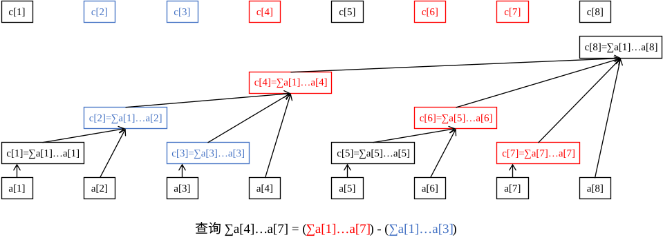

OI Wiki · prijevod · Strukture podatakaOI Wiki · translation · Data structures
Fenwickovo stabloFenwick tree
Sadržaj
Uvod
Fenwickovo stablo (Fenwick tree, binary indexed tree, BIT) struktura je podataka s malo koda koja podržava izmjenu u točki i upit na intervalu.
Što su „izmjena u točki” i „upit na intervalu”?
Zamislimo ovakav zadatak:
Zadan je niz \(a\); treba izvoditi sljedeće dvije operacije:
- za zadane \(x, y\) uvećaj \(a[x]\) za \(y\);
- za zadane \(l, r\) izračunaj zbroj \(a[l \ldots r]\).
Prva je operacija „izmjena u točki”, a druga „upit na intervalu”.
Slično postoje i „izmjena na intervalu” i „upit u točki”. Po jedan primjer svake:
- izmjena na intervalu: za zadane \(l, r, x\) svaki broj u \(a[l \ldots r]\) uvećaj za \(x\);
- upit u točki: za zadani \(x\) izračunaj vrijednost \(a[x]\).
Primijetimo da su intervalni problemi u pravilu strogo teži od problema u točki, jer je operacija u točki isto što i operacija na intervalu duljine \(1\).
Informacija i operacija koju obično Fenwickovo stablo održava moraju biti asocijativne i invertibilne (moraju se moći „oduzimati”), npr. zbrajanje (zbroj), množenje (umnožak), XOR itd.
- Asocijativnost: \((x \circ y) \circ z = x \circ (y \circ z)\), gdje je \(\circ\) binarna operacija.
- Invertibilnost: operacija ima inverznu operaciju, tj. iz poznatih \(x \circ y\) i \(x\) može se izračunati \(y\).
Treba napomenuti:
- da bi množenje po modulu bilo invertibilno, svaki broj mora imati inverz (što je sigurno ispunjeno kad je modul prost);
- informacije poput \(\gcd\) i \(\max\) nisu invertibilne, pa se ne mogu obrađivati običnim Fenwickovim stablom, ali:
- s dva Fenwickova stabla mogu se obrađivati intervalni ekstremi, vidi Efficient Range Minimum Queries using Binary Indexed Trees;
- na ovoj stranici predstavit ćemo i prošireno Fenwickovo stablo složenosti \(\Theta(\log^2n)\) koje podržava upite nad neinvertibilnim informacijama.
Zapravo su problemi koje rješava Fenwickovo stablo podskup problema koje rješava segment tree: što može Fenwickovo stablo, sigurno može i segment tree; što može segment tree, Fenwickovo stablo ne mora moći. Ipak, kôd Fenwickova stabla mnogo je kraći od koda segment treea, a i konstanta u vremenu izvođenja manja je, pa ga se i dalje isplati naučiti.
Ponekad, uz pomoć niza razlika i pomoćnih nizova, Fenwickovo stablo rješava i jače probleme zbrajanja na intervalu uz upit u točki te zbrajanja na intervalu uz zbroj intervala.
Fenwickovo stablo
Prvi dojam
Najprije primjer: želimo znati prefiksni zbroj \(a[1 \ldots 7]\). Kako?
Jedan je način: \(a_1 + a_2 + a_3 + a_4 + a_5 + a_6 + a_7\), dakle zbrajamo \(7\) brojeva.
No što ako već znamo tri broja \(A\), \(B\), \(C\), gdje je \(A\) zbroj \(a[1 \ldots 4]\), \(B\) zbroj \(a[5 \ldots 6]\), a \(C\) zbroj \(a[7 \ldots 7]\) (zapravo sam \(a[7]\))? Kako biste tada računali? Sigurno biste odgovorili: \(A + B + C\), dakle zbrajamo samo \(3\) broja.
Upravo zato Fenwickovo stablo brzo računa informacije: prefiks \([1, n]\) uvijek možemo rastaviti na najviše \(\boldsymbol{\log n}\) intervala čije su informacije već poznate.
Tada samo spojimo informacije tih \(\log n\) intervala i dobijemo odgovor. U usporedbi s izravnim spajanjem \(n\) informacija učinkovitost je znatno veća.
Lako je vidjeti da informacija mora biti asocijativna, inače je ne bismo mogli ovako spajati.
Sljedeća slika prikazuje kako Fenwickovo stablo radi:
Najdonjih osam kvadratića predstavlja izvorni niz podataka \(a\). Nepravilno raspoređeni kvadratići iznad (isti niz kao i najgornjih osam kvadratića) predstavljaju „nadređeni” niz niza \(a\) – niz \(c\).
Niz \(c\) služi za pohranu zbroja nekog intervala izvornog niza \(a\); drugim riječima, informacije tih intervala su poznate, a naš je cilj upitni prefiks rastaviti na te male intervale.
Primjerice, sa slike se vidi:
- \(c_2\) pokriva \(a[1 \ldots 2]\);
- \(c_4\) pokriva \(a[1 \ldots 4]\);
- \(c_6\) pokriva \(a[5 \ldots 6]\);
- \(c_8\) pokriva \(a[1 \ldots 8]\);
- preostali \(c[x]\) pokrivaju samo sam \(a[x]\) (može se gledati kao mali interval \(a[x \ldots x]\) duljine \(1\)).
Lako je uočiti da \(c[x]\) uvijek pokriva ukupnu informaciju nekog intervala čiji je desni kraj \(x\). Lijevi kraj zasad ne razmatramo; najprije osjetimo kako Fenwickovo stablo odgovara na upit.
Primjer: izračunajmo zbroj \(a[1 \ldots 7]\).
Postupak: krećemo od \(c_{7}\) i skačemo unatrag; vidimo da \(c_{7}\) pokriva samo element \(a_{7}\). Zatim pogledamo \(c_{6}\); vidimo da \(c_{6}\) pokriva \(a[5 \ldots 6]\). Zatim skočimo na \(c_{4}\); vidimo da \(c_{4}\) pokriva elemente \(a[1 \ldots 4]\). Zatim pokušamo skočiti na \(c_0\), ali \(c_0\) zapravo ne postoji, pa stajemo.
Upravo smo pronašli \(c_7, c_6, c_4\); to su upravo tri mala intervala na koja se rastavlja \(a[1 \ldots 7]\), a spajanjem dobivamo odgovor \(c_7 + c_6 + c_4\).
Primjer: izračunajmo zbroj \(a[4 \ldots 7]\).
Opet krećemo od \(c_7\), skačemo na \(c_6\) pa na \(c_4\). Sada vidimo da on pokriva zbroj \(a[1 \ldots 4]\), ali mi ne želimo dio \(a[1 \ldots 3]\) – što sad? Vrlo jednostavno: samo oduzmemo zbroj \(a[1 \ldots 3]\).
Pa zašto onda odmah na početku upit za zbroj \(a[4 \ldots 7]\) ne pretvorimo u upit za zbroj \(a[1 \ldots 7]\) i upit za zbroj \(a[1 \ldots 3]\), a na kraju oduzmemo rezultate?

Pokriveni interval
Postavlja se pitanje: koliko se interval koji pokriva \(c[x](x \ge 1)\) zapravo proteže ulijevo? Drugim riječima, kolika je duljina intervala?
U Fenwickovu stablu duljina intervala koji pokriva \(c[x]\) definirana je kao \(2^{k}\), gdje:
- ako najniži binarni bit zovemo \(0\)-tim bitom, \(k\) je upravo redni broj bita na kojem je najniža jedinica (
1) u binarnom zapisu od \(x\); - \(2^k\) (duljina intervala koji pokriva \(c[x]\)) upravo je broj koji u binarnom zapisu od \(x\) čine najniža
1i sve nule (0) iza nje.
Primjer: koji interval pokriva \(c_{88}\)?
Budući da je \(88_{(10)}=01011000_{(2)}\), binarni broj koji čine najniža 1 i nule iza nje jest 1000, tj. \(8\), pa \(c_{88}\) pokriva \(8\) elemenata niza \(a\).
Dakle, \(c_{88}\) predstavlja informaciju intervala \(a[81 \ldots 88]\).
Broj koji čine najniža 1 u binarnom zapisu od \(x\) i nule iza nje označimo s \(\operatorname{lowbit}(x)\); tada je interval koji pokriva \(c[x]\) jednak \([x-\operatorname{lowbit}(x)+1, x]\).
Napomena
\(\operatorname{lowbit}\) nije redni broj \(k\) bita na kojem je najniža 1, nego broj \(2^k\) koji čine ta 1 i sve nule iza nje.
Kako izračunati lowbit? Iz poznavanja bitovnih operacija dobivamo lowbit(x) = x & -x.
Zašto lowbit radi
Ako sve bitove binarnog zapisa od x invertiramo i dodamo 1, dobivamo binarni zapis od -x. Primjerice, binarni zapis broja \(6\) je 110; nakon invertiranja svih bitova dobivamo 001, a dodavanjem 1 dobivamo 010.
Neka je binarni zapis od x oblika (...)10...00; nakon invertiranja svih bitova dobivamo [...]01...11, a nakon dodavanja 1 dobivamo [...]10...00, što je upravo binarni zapis od -x. Ovdje je prva 1 u binarnom zapisu od x ujedno najniža 1 od x.
Svaki bit iza trotočke u (...) i [...] međusobno je suprotan, pa je x & -x = (...)10...00 & [...]10...00 = 10...00, a to je upravo lowbit.
Implementacija
int lowbit(int x) {
// Broj koji u binarnom zapisu od x čine najniža jedinica i sve nule iza nje.
// lowbit(0b01011000) == 0b00001000
// ~~~~^~~~
// lowbit(0b01110010) == 0b00000010
// ~~~~~~^~
return x & -x;
}
def lowbit(x):
"""
Broj koji u binarnom zapisu od x čine najniža jedinica i sve nule iza nje.
lowbit(0b01011000) == 0b00001000
~~~~~^~~
lowbit(0b01110010) == 0b00000010
~~~~~~~^~
"""
return x & -x
Upit na intervalu
Pogledajmo sada konkretnu implementaciju operacija Fenwickova stabla; krenimo od upita na intervalu.
Prisjetimo se postupka upita za \(a[4 \ldots 7]\): pretvorili smo ga u dva potpostupka – upit za zbroj \(a[1 \ldots 7]\) i upit za zbroj \(a[1 \ldots 3]\) – i na kraju oduzeli.
Zapravo se svaki upit na intervalu može tako riješiti: zbroj \(a[l \ldots r]\) jednak je zbroju \(a[1 \ldots r]\) minus zbroj \(a[1 \ldots l - 1]\), čime intervalni problem pretvaramo u prefiksni, koji je lakše obraditi.
Pretvaranje intervalnog upita za \(l \ldots r\) u prefiksne upite za \(1 \ldots r\) i \(1 \ldots l - 1\) te oduzimanje vrlo je čest trik na natjecanjima.
Kako onda izvesti prefiksni upit? Prisjetimo se postupka upita za \(a[1 \ldots 7]\):
Od \(c_{7}\) skačemo unatrag; vidimo da \(c_{7}\) pokriva samo element \(a_{7}\). Zatim pogledamo \(c_{6}\); vidimo da \(c_{6}\) pokriva \(a[5 \ldots 6]\). Zatim skočimo na \(c_{4}\); vidimo da \(c_{4}\) pokriva elemente \(a[1 \ldots 4]\). Zatim pokušamo skočiti na \(c_0\), ali \(c_0\) zapravo ne postoji, pa stajemo.
Upravo smo pronašli \(c_7, c_6, c_4\); to su upravo tri mala intervala na koja se rastavlja \(a[1 \ldots 7]\); spojimo ih i odgovor je \(c_7 + c_6 + c_4\).
Promotrimo gornji postupak: pri svakom skoku unatrag sigurno skačemo na mjesto neposredno lijevo od lijevog kraja trenutnog intervala, koje postaje desni kraj novog intervala; samo tako prefiks rastavljamo bez preklapanja i bez praznina. Primjerice, \(c_6\) pokriva \(a[5 \ldots 6]\), pa sljedeći put skačemo na \(5 - 1 = 4\), tj. pristupamo \(c_4\).
Postupak upita za \(a[1 \ldots x]\) možemo zapisati ovako:
- krećemo od \(c[x]\) i skačemo unatrag; \(c[x]\) pokriva \(a[x-\operatorname{lowbit}(x)+1 \ldots x]\);
- stavimo \(x \gets x - \operatorname{lowbit}(x)\); ako je \(x = 0\), došli smo do kraja i prekidamo petlju; inače se vraćamo na prvi korak;
- spojimo sve posjećene \(c\).
U implementaciji ne moramo najprije pronaći sve \(c\) pa ih tek onda spajati; možemo spajati usput dok skačemo.
Primjerice, ako je informacija koju održavamo zbroj, jednostavno stavimo početno \(\mathrm{ans} = 0\), a zatim za svaki posjećeni \(c[x]\) napravimo \(\mathrm{ans} \gets \mathrm{ans} + c[x]\); na kraju je \(\mathrm{ans}\) rezultat spajanja svega.
Implementacija
int getsum(int x) { // zbroj a[1]..a[x]
int ans = 0;
while (x > 0) {
ans = ans + c[x];
x = x - lowbit(x);
}
return ans;
}
def getsum(x): # zbroj a[1]..a[x]
ans = 0
while x > 0:
ans = ans + c[x]
x = x - lowbit(x)
return ans
Fenwickovo stablo i svojstva njegova oblika stabla
Prije objašnjenja izmjene u točki objasnimo neka osnovna svojstva Fenwickova stabla i podrijetlo njegova oblika stabla; to pomaže boljem razumijevanju izmjene u točki.
Dogovorimo se:
- \(l(x) = x - \operatorname{lowbit}(x) + 1\). Dakle, \(l(x)\) je lijevi kraj intervala koji pokriva \(c[x]\).
- Svaki pozitivni cijeli broj \(x\) može se zapisati u obliku \(s \times 2^{k + 1} + 2^k\), gdje je \(\operatorname{lowbit}(x) = 2^k\).
- U nastavku „\(c[x]\) i \(c[y]\) su disjunktni” znači da se intervali koje pokrivaju \(c[x]\) i \(c[y]\) ne sijeku, tj. \([l(x), x]\) i \([l(y), y]\) su disjunktni. Izrazi poput „\(c[x]\) je sadržan u \(c[y]\)” tumače se analogno.
Svojstvo \(\boldsymbol{1}\): za \(\boldsymbol{x \le y}\) ili su \(\boldsymbol{c[x]}\) i \(\boldsymbol{c[y]}\) disjunktni ili je \(\boldsymbol{c[x]}\) sadržan u \(\boldsymbol{c[y]}\).
Dokaz
Dokaz: pretpostavimo da se \(c[x]\) i \(c[y]\) sijeku, tj. da se \([l(x), x]\) i \([l(y), y]\) sijeku; tada sigurno vrijedi \(l(y) \le x \le y\).
Zapišimo \(y\) kao \(s \times 2^{k +1} + 2^k\); tada je \(l(y) = s \times 2^{k + 1} + 1\). Stoga se \(x\) može zapisati kao \(s \times 2^{k +1} + b\), gdje je \(1 \le b \le 2^k\).
Lako je vidjeti da je \(\operatorname{lowbit}(x) = \operatorname{lowbit}(b)\). Kako je još \(b - \operatorname{lowbit}(b) \ge 0\),
vrijedi \(l(x) = x - \operatorname{lowbit}(x) + 1 = s \times 2^{k +1} + b - \operatorname{lowbit}(b) +1 \ge s \times 2^{k +1} + 1 = l(y)\), tj. \(l(y) \le l(x) \le x \le y\).
Dakle, ako se \(c[x]\) i \(c[y]\) sijeku, interval koji pokriva \(c[x]\) sigurno je u cijelosti sadržan u \(c[y]\).
Svojstvo \(\boldsymbol{2}\): \(\boldsymbol{c[x]}\) je pravi podskup od \(\boldsymbol{c[x + \operatorname{lowbit}(x)]}\).
Dokaz
Dokaz: neka je \(y = x + \operatorname{lowbit}(x)\) i \(x = s \times 2^{k + 1} + 2^k\); tada je \(y = (s + 1) \times 2^{k +1}\) i \(l(x) = s \times 2^{k + 1} + 1\).
Lako je vidjeti da je \(\operatorname{lowbit}(y) \ge 2^{k + 1}\), pa je \(l(y) = (s + 1) \times 2^{k + 1} - \operatorname{lowbit}(y) + 1 \le s \times 2^{k +1} + 1= l(x)\), tj. \(l(y) \le l(x) \le x < y\).
Dakle, \(c[x]\) je pravi podskup od \(c[x + \operatorname{lowbit}(x)]\).
Svojstvo \(3\): za svaki \(\boldsymbol{x < y < x + \operatorname{lowbit}(x)}\), \(\boldsymbol{c[x]}\) i \(\boldsymbol{c[y]}\) su disjunktni.
Dokaz
Dokaz: neka je \(x = s \times 2^{k + 1} + 2^k\); tada je \(y = x + b = s \times 2^{k + 1} + 2^k + b\), gdje je \(1 \le b < 2^k\).
Lako je vidjeti da je \(\operatorname{lowbit}(y) = \operatorname{lowbit}(b)\). Kako je još \(b - \operatorname{lowbit}(b) \ge 0\),
vrijedi \(l(y) = y - \operatorname{lowbit}(y) + 1 = x + b - \operatorname{lowbit}(b) + 1 > x\), tj. \(l(x) \le x < l(y) \le y\).
Dakle, \(c[x]\) i \(c[y]\) su disjunktni.
Uz ta tri svojstva pogledajmo sada oblik stabla Fenwickova stabla (zanemarite bridove od \(a\) prema \(c\)).
Zapravo je oblik stabla Fenwickova stabla graf koji dobijemo povlačenjem brida od \(x\) prema \(x + \operatorname{lowbit}(x)\), pri čemu je \(x + \operatorname{lowbit}(x)\) roditelj od \(x\).
Napomena: kad razmatramo oblik stabla Fenwickova stabla, ne uzimamo u obzir veličinu Fenwickova stabla, tj. radi lakše analize smatramo da je stablo beskonačno veliko. U stvarnoj implementaciji trebamo samo \(c[x]\) za \(x \le n\), gdje je \(n\) duljina izvornog niza.
Ovo stablo prirodno ima mnogo lijepih svojstava; navodimo neka (neka \(fa[u]\) označava neposrednog roditelja od \(u\)):
- \(u < fa[u]\).
- \(u\) je veći od svakog svog potomka i manji od svakog svog pretka.
- \(\operatorname{lowbit}\) vrha \(u\) strogo je manji od \(\operatorname{lowbit}\) vrha \(fa[u]\).
Dokaz
Neka je \(y = x + \operatorname{lowbit}(x)\) i \(x = s \times 2^{k + 1} + 2^k\); tada je \(y = (s + 1) \times 2^{k +1}\) i lako je vidjeti da je \(\operatorname{lowbit}(y) \ge 2^{k + 1} > \operatorname{lowbit}(x)\), što je i trebalo dokazati.
- Visina vrha \(x\) je \(\log_2\operatorname{lowbit}(x)\), tj. redni broj bita najniže
1u binarnom zapisu od \(x\).
Definicija visine
Visina \(h(x)\) vrha \(x\) zadovoljava: ako je \(x \bmod 2 = 1\), onda je \(h(x) = 0\); inače je \(h(x) = \max(h(y)) + 1\), gdje \(y\) prolazi svom djecom od \(x\) (tada \(x\) ima barem jedno dijete, \(x - 1\)).
Drugim riječima, visina vrha točno je za \(1\) veća od visine njegova najvišeg djeteta. Ako vrh nema djece, visina mu je \(0\).
Pojam visine uvodimo ovdje kako bismo kasnije lakše objasnili složenost.
- \(c[u]\) je pravi podskup od \(c[fa[u]]\) (svojstvo \(2\)).
- \(c[u]\) je pravi podskup od \(c[v]\), gdje je \(v\) bilo koji predak od \(u\) (indukcijom iz prethodnog svojstva).
- \(c[u]\) pravo sadrži \(c[v]\), gdje je \(v\) bilo koji potomak od \(u\) (prethodno svojstvo sa zamijenjenim \(u\) i \(v\)).
- Za svaki \(v' > u\), ako \(v'\) nije predak od \(u\), onda su \(c[u]\) i \(c[v']\) disjunktni.
Dokaz
Među \(u\) i precima od \(u\) sigurno postoji vrh \(v\) takav da je \(v < v' < fa[v]\); prema svojstvu \(3\), \(c[v']\) je disjunktan s \(c[v]\), a \(c[v]\) sadrži \(c[u]\), pa je \(c[v']\) disjunktan s \(c[u]\).
- Za svaki \(v < u\), ako \(v\) nije u podstablu od \(u\), onda su \(c[u]\) i \(c[v]\) disjunktni (prethodno svojstvo sa zamijenjenim \(u\) i \(v'\)).
- Za svaki \(v > u\), \(c[u]\) je pravi podskup od \(c[v]\) ako i samo ako je \(v\) predak od \(u\) (sažetak nekoliko prethodnih svojstava). To je temeljno načelo izmjene u točki u Fenwickovu stablu.
- Neka je \(u = s \times 2^{k + 1} + 2^k\); tada \(u\) ima \(k = \log_2\operatorname{lowbit}(u)\) djece, s oznakama \(u - 2^t(0 \le t < k)\).
- Primjer: neka je \(k = 3\) i binarna oznaka od \(u\) neka je
...1000; tada \(u\) ima troje djece, s binarnim oznakama...0111,...0110i...0100.
- Primjer: neka je \(k = 3\) i binarna oznaka od \(u\) neka je
Dokaz
Oduzmemo li od broja \(x\) broj \(2^t\), \(t\)-ti bit od \(x\) se invertira, a niži bitovi ostaju nepromijenjeni.
Promotrimo dijete \(v\) od \(u\): vrijedi \(v + \operatorname{lowbit}(v) = u\), tj. \(v = u - 2^t\) i \(\operatorname{lowbit}(v) = 2^t\). Neka je \(u = s \times 2^{k + 1} + 2^k\).
Slučaj \(\boldsymbol{0 \le t < k}\): \(t\)-ti bit od \(u\) i svi bitovi iza njega su \(0\), pa \(t\)-ti bit od \(v = u - 2^t\) postaje \(1\), a bitovi iza njega ostaju \(0\); vrijedi \(\operatorname{lowbit}(v) = 2^t\).
Slučaj \(\boldsymbol{t = k}\): tada je \(v = u - 2^k\), \(k\)-ti bit od \(v\) postaje \(0\); ne vrijedi \(\operatorname{lowbit}(v) = 2^t\).
Slučaj \(\boldsymbol{t > k}\): tada je \(v = u - 2^t\), \(k\)-ti bit od \(v\) je \(1\), pa je \(\operatorname{lowbit}(v) = 2^k\); ne vrijedi \(\operatorname{lowbit}(v) = 2^t\).
- Intervali koje pokrivaju \(c\) sve djece od \(u\) točno se nadovezuju u \([l(u), u - 1]\).
- Primjer: neka je \(k = 3\) i binarna oznaka od \(u\) neka je
...1000; tada \(u\) ima troje djece, s binarnim oznakama...0111,...0110i...0100. c[...0100]predstavljaa[...0001 ~ ...0100].c[...0110]predstavljaa[...0101 ~ ...0110].c[...0111]predstavljaa[...0111 ~ ...0111].- Lako je vidjeti da je unija gornjih triju pokrivenih intervala upravo
a[...0001 ~ ...0111], tj. \([l(u), u - 1]\).
- Primjer: neka je \(k = 3\) i binarna oznaka od \(u\) neka je
Dokaz
Djeca od \(u\) uvijek se mogu zapisati kao \(u - 2^t(0 \le t < k)\); lako je vidjeti da je za manji \(t\) broj \(u - 2^t\) veći, pa je interval koji predstavlja više udesno. Neka je \(f(t) = u - 2^t\); tada su \(f(k - 1), f(k - 2), \ldots, f(0)\) redom djeca od \(u\) slijeva nadesno.
Lako je vidjeti da je \(\operatorname{lowbit}(f(t)) = 2^t\), pa je \(l(f(t)) = u - 2^t - 2^t + 1 = u - 2^{t + 1} + 1\).
Promotrimo dvoje susjedne djece \(f(t + 1)\) i \(f(t)\). Desni kraj intervala prvog je \(f(t + 1) = u - 2^{t + 1}\), a lijevi kraj intervala drugog je \(l(f(t)) = u - 2^{t + 1} + 1\); točno se nadovezuju.
Promotrimo krajnje lijevo dijete \(f(k - 1)\): lijevi kraj njegova intervala \(l(f(k - 1)) = u - 2^k + 1\) upravo je \(l(u)\).
Promotrimo krajnje desno dijete \(f(0)\): desni kraj njegova intervala upravo je \(u - 1\).
Dakle, intervali koje pokrivaju ta djeca točno se slažu u \([l(u), u - 1]\).
Izmjena u točki
Razmotrimo sada kako izmijeniti \(a[x]\) u točki.
Cilj nam je brzo i ispravno održavati niz \(c\). Radi učinkovitosti trebamo proći i izmijeniti samo one \(c[y]\) koji pokrivaju \(a[x]\), jer se ostali \(c\) očito ne mijenjaju.
Svaki \(c[y]\) koji pokriva \(a[x]\) sigurno sadrži \(c[x]\) (prema svojstvu \(1\)), pa je \(y\) u obliku stabla Fenwickova stabla predak od \(x\). Stoga od \(x\) neprestano skačemo na roditelja dok ne premašimo duljinu izvornog niza.
Neka \(n\) označava veličinu niza \(a\); postupak izmjene \(a[x]\) u točki lako je zapisati:
- početno stavimo \(x' = x\);
- izmijenimo \(c[x']\);
- stavimo \(x' \gets x' + \operatorname{lowbit}(x')\); ako je \(x' > n\), došli smo do kraja i prekidamo petlju; inače se vraćamo na drugi korak.
Vrsta informacije na intervalu i vrsta izmjene u točki zajedno određuju način izmjene \(c[x']\). Nekoliko primjera:
- Ako \(c[x']\) održava zbroj intervala, a izmjena je uvećanje \(a[x]\) za \(p\), onda se svi \(c[x']\) također uvećaju za \(p\).
- Ako \(c[x']\) održava umnožak intervala, a izmjena je množenje \(a[x]\) s \(p\), onda se svi \(c[x']\) također pomnože s \(p\).
Međutim, zbog slobode izmjene u točki vrsta izmjene i održavana informacija ne moraju biti ista operacija; primjerice, ako \(c[x']\) održava zbroj intervala, a izmjena je pridruživanje \(a[x]\) vrijednosti \(p\), možemo je pretvoriti u uvećanje \(a[x]\) za \(p - a[x]\). Ako je izmjena množenje \(a[x]\) s \(p\), pretvorimo je u uvećanje \(a[x]\) za \(a[x] \times p - a[x]\).
Implementaciju dajemo na primjeru održavanja zbroja intervala i zbrajanja u točki.
Implementacija
void add(int x, int k) {
while (x <= n) { // ne smije izaći izvan granica
c[x] = c[x] + k;
x = x + lowbit(x);
}
}
def add(x, k):
while x <= n: # ne smije izaći izvan granica
c[x] = c[x] + k
x = x + lowbit(x)
Izgradnja stabla
To znači izgraditi Fenwickovo stablo iz početno zadanog niza (potpuno predobraditi \(c\)).
Obično se to može izravno pretvoriti u \(n\) izmjena u točki, složenosti \(\Theta(n \log n)\) (analiza složenosti slijedi kasnije).
Primjerice, ako treba izgraditi stablo za niz \(a = (5, 1, 4)\), to jednostavno gledamo kao zbrajanje \(5\) u točki \(a[1]\), zbrajanje \(1\) u točki \(a[2]\) i zbrajanje \(4\) u točki \(a[3]\).
Postoji i izgradnja u \(\Theta(n)\); vidi odjeljak \(\Theta(n)\) izgradnja stabla na ovoj stranici.
Analiza složenosti
Prostorna složenost očito je \(\Theta(n)\).
Vremenska složenost:
- Za upit na intervalu: cijeli iterativni postupak \(x \gets x - \operatorname{lowbit}(x)\) možemo gledati kao postupno pretvaranje svih jedinica u binarnom zapisu od \(x\) u nule, od nižih bitova prema višima; broj intervala na koje rastavljamo jednak je broju jedinica u binarnom zapisu od \(x\) (tj. \(\operatorname{popcount}(x)\)). Dakle, složenost jednog upita je \(\Theta(\log n)\);
- Za izmjenu u točki: pri skakanju na roditelja posjećena visina strogo raste, a stalno vrijedi \(x \le n\). Budući da je visina vrha \(x\) jednaka \(\log_2\operatorname{lowbit}(x)\), dosegnuta visina ne premašuje \(\log_2n\), pa je broj posjećenih \(c\) reda \(\log n\). Dakle, složenost jedne izmjene u točki je \(\Theta(\log n)\).
Zbrajanje na intervalu, zbroj intervala
Preduvjet: Prefiksne sume i razlike.
Ovaj se problem može riješiti s dva Fenwickova stabla koja održavaju niz razlika.
Promotrimo niz razlika \(d\) niza \(a\), gdje je \(d[i] = a[i] - a[i - 1]\). Budući da je prefiksni zbroj niza razlika upravo izvorni niz, vrijedi \(a_i=\sum_{j=1}^i d_j\).
Kao i prije, upit za zbroj intervala pretvaramo oduzimanjem u upit za prefiksni zbroj. Promotrimo upit za zbroj \(a[1 \ldots r]\), tj. \(\sum_{i=1}^{r} a_i\), i izvedimo:
Promotrimo li izraz, lako vidimo da se svaki \(d_j\) zbraja ukupno \(r - j + 1\) puta. Nastavimo izvod:
Iz \(\sum_{i=1}^r d_i\) ne možemo izvesti vrijednost \(\sum_{i=1}^r d_i \times i\), pa trebamo dva Fenwickova stabla koja zasebno održavaju zbrojeve \(d_i\) i \(d_i \times i\).
Kako onda izvesti zbrajanje na intervalu? Promotrimo kako zbrajanje \(x\) na intervalu \(a[l \ldots r]\) izvornog niza utječe na \(d\).
Budući da je razlika \(d[i] = a[i] - a[i - 1]\),
- \(a[l]\) se uvećao za \(v\), a \(a[l - 1]\) je nepromijenjen, pa se \(d[l]\) uvećao za \(v\);
- \(a[r + 1]\) je nepromijenjen, a \(a[r]\) se uvećao za \(v\), pa se \(d[r + 1]\) umanjio za \(v\);
- za svaki \(i\) različit od \(l\) i od \(r+1\), \(a[i]\) i \(a[i - 1]\) ili su oba nepromijenjena ili su se oba uvećala za \(v\), a \(a[i] + v - (a[i - 1] + v)\) i dalje je \(a[i] - a[i - 1]\), pa su ostali \(d[i]\) nepromijenjeni.
Odatle se lako dosjetiti načina održavanja: u Fenwickovu stablu koje održava \(d_i\) zbrojimo \(v\) u točki \(l\) i \(-v\) u točki \(r + 1\); u Fenwickovu stablu koje održava \(d_i \times i\) zbrojimo \(v \times l\) u točki \(l\) i \(-v \times (r + 1)\) u točki \(r + 1\).
Za slabiji problem, „zbrajanje na intervalu uz upit u točki”, dovoljno je Fenwickovim stablom održavati samo niz razlika \(d_i\). Za upit vrijednosti \(a[x]\) u točki jednostavno izračunamo zbroj \(d[1 \ldots x]\).
Ovdje izravno dajemo kôd za „zbrajanje na intervalu, zbroj intervala”:
Implementacija
int t1[MAXN], t2[MAXN], n;
int lowbit(int x) { return x & (-x); }
void add(int k, int v) {
int v1 = k * v;
while (k <= n) {
t1[k] += v, t2[k] += v1;
// Pazi: ne smije se pisati t2[k] += k * v, jer k više nije indeks u izvornom nizu
k += lowbit(k);
}
}
int getsum(int *t, int k) {
int ret = 0;
while (k) {
ret += t[k];
k -= lowbit(k);
}
return ret;
}
void add1(int l, int r, int v) {
add(l, v), add(r + 1, -v); // zbrajanje na intervalu rastavljamo na dva prefiksna zbrajanja
}
long long getsum1(int l, int r) {
return (r + 1ll) * getsum(t1, r) - 1ll * l * getsum(t1, l - 1) -
(getsum(t2, r) - getsum(t2, l - 1));
}
t1 = [0] * MAXN
t2 = [0] * MAXN
n = 0
def lowbit(x):
return x & (-x)
def add(k, v):
v1 = k * v
while k <= n:
t1[k] = t1[k] + v
t2[k] = t2[k] + v1
k = k + lowbit(k)
def getsum(t, k):
ret = 0
while k:
ret = ret + t[k]
k = k - lowbit(k)
return ret
def add1(l, r, v):
add(l, v)
add(r + 1, -v)
def getsum1(l, r):
return (
(r) * getsum(t1, r)
- l * getsum(t1, l - 1)
- (getsum(t2, r) - getsum(t2, l - 1))
)
Po istom načelu trebalo bi se moći implementirati „množenje na intervalu, umnožak intervala”, „XOR intervala s brojem, upit za XOR intervala” itd., sve dok su održavana informacija i operacija na intervalu ista vrsta operacije; zainteresirani čitatelji mogu to sami isprobati.
Dvodimenzionalno Fenwickovo stablo
Izmjena u točki, upit za podmatricu
Dvodimenzionalno Fenwickovo stablo, poznato i kao Fenwickovo stablo nad Fenwickovim stablima, služi za održavanje izmjena u točki i prefiksnih informacija nad dvodimenzionalnim nizom.
Slično jednodimenzionalnom Fenwickovu stablu, s \(c(x, y)\) označavamo ukupnu informaciju matrice \(a(x - \operatorname{lowbit}(x) + 1, y - \operatorname{lowbit}(y) + 1) \ldots a(x, y)\), tj. matrice kojoj je \(a(x, y)\) donji desni kut, visina \(\operatorname{lowbit}(x)\), a širina \(\operatorname{lowbit}(y)\).
Za izmjenu u točki neka je:
Dakle, \(f(x, i)\) je \(i\)-ti predak od \(x\) u obliku stabla Fenwickova stabla (\(0\)-ti predak je sam vrh).
Tada \(a(x, y)\) pokrivaju samo elementi \(c(f(x, i), f(y, j))\), pa pri izmjeni \(a(x, y)\) treba izmijeniti samo sve \(c(f(x, i), f(y, j))\) za koje je \(f(x, i) \le n\) i \(f(y, j) \le m\).
Dokaz ispravnosti
Neka \(c(p, q)\) pokriva \(a(x, y)\); tražimo moguće vrijednosti \(p\) i \(q\).
Promotrimo jednodimenzionalno Fenwickovo stablo \(c_1\) veličine \(n\) (nad izvornim nizom \(a_1\)) i jednodimenzionalno Fenwickovo stablo \(c_2\) veličine \(m\) (nad izvornim nizom \(a_2\)).
Tvrdnja je tada ekvivalentna uvjetu: \(c_1(p)\) pokriva \(a_1[x]\) i \(c_2(q)\) pokriva \(a_2[y]\).
Drugim riječima, u obliku stabla Fenwickova stabla \(p\) je jedan od vrhova među \(x\) i njegovim precima, a \(q\) jedan od vrhova među \(y\) i njegovim precima.
Dakle, \(p = f(x, i)\) i \(q = f(y, j)\).
Za upit neka je:
Tada spajamo sve \(c(g(x, i), g(y, j))\) za koje je \(g(x, i), g(y, j) > 0\).
Dokaz ispravnosti
Neka \(\circ\) označava operaciju spajanja dviju informacija (primjerice, ako je informacija zbroj intervala, onda je \(\circ = +\)).
Promotrimo jednodimenzionalno Fenwickovo stablo \(c_1\): \(c_1[g(x, 0)] \circ c_1[g(x, 1)] \circ c_1[g(x, 2)] \circ \cdots\) upravo predstavlja informaciju intervala \([1 \ldots x]\) izvornog niza.
Slično, neka je \(t(x) = c(x, g(y, 0)) \circ c(x, g(y, 1)) \circ c(x, g(y, 2)) \circ \cdots\); tada \(t(x)\) upravo predstavlja informaciju matrice \(a(x - \operatorname{lowbit}(x) + 1, 1) \ldots a(x, y)\).
Opet slično, \(t(g(x, 0)) \circ t(g(x, 1)) \circ t(g(x, 2)) \circ \cdots\) predstavlja informaciju matrice \(a(1, 1) \ldots a(x, y)\).
Zapravo, gledamo li funkciju \(t(x)\) kao Fenwickovo stablo, dobivamo Fenwickovo stablo ugniježđeno u Fenwickovo stablo; otud i naziv „Fenwickovo stablo nad Fenwickovim stablima”.
Slijedi kôd za zbrajanje u točki i upit za zbroj podmatrice.
Implementacija
void add(int x, int y, int v) {
for (int i = x; i <= n; i += lowbit(i)) {
for (int j = y; j <= m; j += lowbit(j)) {
// Pazi: ovdje moramo uvesti varijable petlje; ne možemo kao u jednodimenzionalnom slučaju pisati samo while (x <= n)
c[i][j] += v;
}
}
}
int sum(int x, int y) {
int res = 0;
for (int i = x; i > 0; i -= lowbit(i)) {
for (int j = y; j > 0; j -= lowbit(j)) {
res += c[i][j];
}
}
return res;
}
int ask(int x1, int y1, int x2, int y2) {
// upit za zbroj podmatrice
return sum(x2, y2) - sum(x2, y1 - 1) - sum(x1 - 1, y2) + sum(x1 - 1, y1 - 1);
}
Zbrajanje na podmatrici, zbroj podmatrice
Preduvjet: Prefiksne sume i razlike i odjeljak Zbrajanje na intervalu, zbroj intervala na ovoj stranici.
Slično problemu „zbrajanje na intervalu, zbroj intervala” jednodimenzionalnog Fenwickova stabla, razmotrimo održavanje niza razlika.
Niz razlika nad dvodimenzionalnim nizom izgleda ovako:
Zašto baš takva definicija?
Zato što bi u idealnom slučaju dvodimenzionalni prefiksni zbroj nad matricom razlika trebao dati izvornu matricu, jer su to međusobno inverzne operacije.
Formula dvodimenzionalnog prefiksnog zbroja glasi:
\(s(i, j) = s(i - 1, j) + s(i, j - 1) - s(i - 1, j - 1) + a(i, j)\).
Dakle, ako je \(a\) izvorni niz, a \(d\) niz razlika, vrijedi:
\(a(i, j) = a(i - 1, j) + a(i, j - 1) - a(i - 1, j - 1) + d(i, j)\)
Prebacivanjem članova dobivamo formulu dvodimenzionalnih razlika:
\(d(i, j) = a(i, j) - a(i - 1, j) - a(i, j - 1) + a(i - 1, j - 1)\).
Tako zbrajanje \(v\) na podmatrici s gornjim lijevim kutom \((x_1, y_1)\) i donjim desnim kutom \((x_2, y_2)\) odgovara, u nizu razlika, zbrajanju \(v\) u točkama \(d(x_1, y_1)\) i \(d(x_2 + 1, y_2 + 1)\) te zbrajanju \(-v\) u točkama \(d(x_2 + 1, y_1)\) i \(d(x_1, y_2 + 1)\).
Što se tiče razloga, dovoljno je ta četiri \(d\) raspisati po definiciji i analizirati promjenu svakog člana.
Primjer: neka je niz razlika početno \(0\); nakon zbrajanja \(v\) na podmatrici \(a(2, 2) \ldots a(3, 4)\) niz razlika postaje:
(Pritom je podmatrica \(a(2, 2) \ldots a(3, 4)\) upravo središnja matrica veličine \(2 \times 3\).)
Dakle, zbrajanje na podmatrici izvodimo pretvaranjem u četiri zbrajanja u točki nad nizom razlika.
Razmotrimo sada upit za zbroj podmatrice:
Za točku \((x, y)\) dvodimenzionalni prefiksni zbroj može se zapisati kao:
Razlog je taj što je prefiksni zbroj prefiksnog zbroja razlika upravo izvorni prefiksni zbroj.
Slično problemu „zbrajanje na intervalu, zbroj intervala” jednodimenzionalnog Fenwickova stabla, prebrojimo pojavljivanja \(d(h, k)\): ima ih \((x - h + 1) \times (y - k + 1)\).
Nastavimo izvod:
Dakle, trebamo održavati četiri Fenwickova stabla, koja redom održavaju zbrojeve \(d(i, j)\), \(d(i, j) \times i\), \(d(i, j) \times j\) i \(d(i, j) \times i \times j\).
Naravno, kao i u jednodimenzionalnom slučaju, ako treba samo zbrajanje na podmatrici uz upit u točki, dovoljno je održavati jedan niz razlika i pitati za prefiksni zbroj.
Slijedi kôd:
Implementacija
using ll = long long;
ll t1[N][N], t2[N][N], t3[N][N], t4[N][N];
void add(ll x, ll y, ll z) {
for (int X = x; X <= n; X += lowbit(X))
for (int Y = y; Y <= m; Y += lowbit(Y)) {
t1[X][Y] += z;
t2[X][Y] += z * x; // Pazi: z * x, a ne z * X; isto vrijedi i dalje
t3[X][Y] += z * y;
t4[X][Y] += z * x * y;
}
}
void range_add(ll xa, ll ya, ll xb, ll yb,
ll z) { // podmatrica od (xa, ya) do (xb, yb)
add(xa, ya, z);
add(xa, yb + 1, -z);
add(xb + 1, ya, -z);
add(xb + 1, yb + 1, z);
}
ll ask(ll x, ll y) {
ll res = 0;
for (int i = x; i; i -= lowbit(i))
for (int j = y; j; j -= lowbit(j))
res += (x + 1) * (y + 1) * t1[i][j] - (y + 1) * t2[i][j] -
(x + 1) * t3[i][j] + t4[i][j];
return res;
}
ll range_ask(ll xa, ll ya, ll xb, ll yb) {
return ask(xb, yb) - ask(xb, ya - 1) - ask(xa - 1, yb) + ask(xa - 1, ya - 1);
}
Fenwickovo stablo nad frekvencijskim nizom i primjene
Znamo da se obično Fenwickovo stablo gradi izravno nad izvornim nizom; \(c_6\) predstavlja informaciju intervala \(a[5 \ldots 6]\).
No zapravo Fenwickovo stablo možemo izgraditi i nad frekvencijskim nizom izvornog niza; to je Fenwickovo stablo nad frekvencijskim nizom.
Što je frekvencijski niz?
Frekvencijski niz \(b\) niza \(a\) zadovoljava: vrijednost \(b[x]\) jednaka je broju pojavljivanja \(x\) u \(a\).
Primjerice, frekvencijski niz od \(a = (1, 3, 4, 3, 4)\) jest \(b = (1, 0, 2, 2)\).
Očito veličina \(b\) ovisi o rasponu vrijednosti od \(a\).
Ako je raspon vrijednosti izvornog niza prevelik, a bitne nisu konkretne vrijednosti nego samo njihov međusobni poredak, izvorni se niz često komprimira (diskretizira) prije izgradnje frekvencijskog niza.
Osim toga, frekvencijski niz prikazuje niz bez obzira na poredak: opisuje sadržaj elemenata niza, a zanemaruje njihov redoslijed; ako se dva niza razlikuju samo u poretku, a sadrže isto, imaju isti frekvencijski niz.
Zato je kod problema u kojima poredak zadanog niza ne utječe na odgovor obično zornije razmišljati u terminima frekvencijskog niza, primjerice [NOIP2021] 数列.
Pomoću Fenwickova stabla nad frekvencijskim nizom možemo riješiti nekoliko klasičnih problema.
Izmjena u točki, upit za globalno \(k\)-ti najmanji
Ovdje razmatramo samo \(k\)-ti najmanji; problem \(k\)-tog najvećeg jednostavnim se računom svodi na \(k\)-ti najmanji.
Problem dopušta kompresiju vrijednosti: ako je raspon vrijednosti izvornog niza \(a\) prevelik, komprimiramo ga pa tek onda gradimo frekvencijski niz \(b\). Pazite: treba komprimirati i vrijednosti koje se pojavljuju u izmjenama u točki, a ne samo elemente izvornog niza \(a\).
Za izmjenu u točki dovoljno je izmjenu u točki izvornog niza pretvoriti u izmjenu u točki frekvencijskog niza. Konkretno, ako se \(a[x]\) mijenja iz \(y\) u \(z\), to u frekvencijskom nizu \(b\) odgovara umanjenju \(b[y]\) za \(1\) i uvećanju \(b[z]\) za \(1\).
Za upit \(k\)-tog najmanjeg razmotrimo binarno pretraživanje po \(x\): pitamo za prefiksni zbroj \([1, x]\) frekvencijskog niza i tražimo \(x_0\) takav da je prefiksni zbroj \([1, x_0]\) \(< k\), a prefiksni zbroj \([1, x_0 + 1]\) \(\ge k\); tada je \(k\)-ti broj \(x_0 + 1\) (napomena: prefiksni zbroj \([1, 0]\) smatramo \(0\)).
Složenost je tada \(\Theta(\log^2n)\).
Razmotrimo zamjenu binarnog pretraživanja binary liftingom.
Neka je \(x = 0\), \(\mathrm{sum} = 0\); prolazimo \(i\) od \(\log_2n\) prema \(0\):
- pitamo za zbroj \(t\) intervala \([x + 1 \ldots x + 2^i]\) frekvencijskog niza;
- ako je \(\mathrm{sum} + t < k\), proširenje uspijeva: \(x \gets x + 2^i\), \(\mathrm{sum} \gets \mathrm{sum} + t\); inače proširenje ne uspijeva i ništa ne radimo.
Tako dobiveni \(x\) najveći je broj za koji je prefiksni zbroj \([1 \ldots x]\) \(< k\), pa je konačni odgovor \(x + 1\).
Čini se da ova metoda nimalo ne poboljšava vremensku učinkovitost, ali zapravo je za upit zbroja \([x + 1 \ldots x + 2^i]\) dovoljno pristupiti vrijednosti \(c[x + 2^i]\).
Razlog je jednostavan: promotrimo \(\operatorname{lowbit}(x + 2^i)\); on je sigurno \(2^i\), jer su se na \(x\) dotad dodavale samo potencije \(2^j\) s \(j > i\). Zato \(c[x + 2^i]\) predstavlja upravo interval \([x + 1 \ldots x + 2^i]\).
Tako se vremenska složenost smanjuje na \(\Theta(\log n)\).
Implementacija
// upit za k-ti najmanji u Fenwickovu stablu nad frekvencijskim nizom
int kth(int k) {
int sum = 0, x = 0;
for (int i = log2(n); ~i; --i) {
x += 1 << i; // pokušaj proširenja
if (x > n || sum + t[x] >= k) // ako proširenje ne uspije
x -= 1 << i;
else
sum += t[x];
}
return x + 1; // ako ne postoji, vraća n + 1
}
# upit za k-ti najmanji u Fenwickovu stablu nad frekvencijskim nizom
def kth(k):
sum = 0
x = 0
i = int(log2(n))
while ~i:
x = x + (1 << i) # pokušaj proširenja
if x > n or sum + t[x] >= k: # ako proširenje ne uspije
x = x - (1 << i)
else:
sum = sum + t[x]
i = i - 1
return x + 1 # ako ne postoji, vraća n + 1
Globalne inverzije (globalni dvodimenzionalni parcijalni poredak)
Dodatno čitanje i referentna implementacija: Inverzije
Globalne inverzije također se mogu elegantno riješiti Fenwickovim stablom nad frekvencijskim nizom. Problem glasi: za zadani niz \(a\) duljine \(n\) izračunajte broj parova \((i, j)\) u \(a\) za koje je \(i < j\) i \(a[i] > a[j]\).
Problem dopušta kompresiju vrijednosti: ako je raspon vrijednosti izvornog niza \(a\) prevelik, komprimiramo ga pa tek onda gradimo frekvencijski niz \(b\).
Prolazimo \(i\) unatrag od \(n\) do \(1\) kao indeks prvog elementa inverzije, zatim izračunamo koliko \(j > i\) zadovoljava \(a[j] < a[i]\) i na kraju zbrojimo odgovore.
Zapravo trebamo učiniti samo ovo (neka je trenutno \(a[i] = x\)):
- upitamo za prefiksni zbroj \(b[1 \ldots x - 1]\); to je broj inverzija čiji je lijevi element \(a[i]\);
- uvećamo \(b[x]\) za \(1\).
Razlog je sasvim prirodan: elementi koji se pojavljuju u \(b[1 \ldots x-1]\) sigurno su manji od trenutnog \(x = a[i]\), a zbog prolaska \(i\) unatrag indeksi \(j\) u izvornom nizu tih elemenata koji su već u frekvencijskom nizu prirodno su veći od trenutnog indeksa \(i\).
Na primjeru, \(a = (4, 3, 1, 2, 1)\).
\(i\) prolazi \(5 \to 1\):
- \(a[5] = 1\), prefiksni zbroj \(b[1 \ldots 0]\) je \(0\), \(b[1]\) uvećamo za \(1\), \(b = (1, 0, 0, 0)\).
- \(a[4] = 2\), prefiksni zbroj \(b[1 \ldots 1]\) je \(1\), \(b[2]\) uvećamo za \(1\), \(b = (1, 1, 0, 0)\).
- \(a[3] = 1\), prefiksni zbroj \(b[1 \ldots 0]\) je \(0\), \(b[1]\) uvećamo za \(1\), \(b = (2, 1, 0, 0)\).
- \(a[2] = 3\), prefiksni zbroj \(b[1 \ldots 2]\) je \(3\), \(b[3]\) uvećamo za \(1\), \(b = (2, 1, 1, 0)\).
- \(a[1] = 4\), prefiksni zbroj \(b[1 \ldots 3]\) je \(4\), \(b[4]\) uvećamo za \(1\), \(b = (2, 1, 1, 1)\).
Konačni je odgovor stoga \(0 + 1 + 0 + 3 + 4 = 8\).
Primijetimo da se pri prolasku po \(i\) dva koraka – upit \(b[1 \ldots x - 1]\) i uvećanje \(b[x]\) – mogu zamijeniti, tj. najprije uvećati \(b[x]\) pa tek onda upitati \(b[1 \ldots x - 1]\), bez utjecaja na odgovor. Dva objašnjenja:
- Izmjena \(b[x]\) ne utječe na upit \(b[1 \ldots x - 1]\).
- Nakon zamjene zapravo brojimo parove s \(i \le j\) i \(a[i] > a[j]\), a za \(i = j\) nikad ne vrijedi \(a[i] > a[j]\), pa je \(i \le j\) isto što i \(i < j\); to je ekvivalentno izvornom problemu inverzija.
Ako brojimo nestroge inverzije (\(i < j\) i \(a[i] \ge a[j]\)), treba pitati za zbroj \(b[1 \ldots x]\), a tada se ta dva koraka ne smiju zamijeniti; opet dva objašnjenja:
- Izmjena \(b[x]\) utječe na upit \(b[1 \ldots x]\).
- Nakon zamjene zapravo brojimo parove s \(i \le j\) i \(a[i] \ge a[j]\), a za \(i = j\) uvijek vrijedi \(a[i] \ge a[j]\), pa \(i \le j\) nije isto što i \(i < j\) i problem nije ekvivalentan izvornomu.
Ako brojimo parove s \(i \le j\) i \(a[i] \ge a[j]\), onda ta dva koraka upravo treba zamijeniti.
Osim toga, za izvorni problem inverzija postoji i pristup s prolaskom \(j\) unaprijed, pri čemu pitamo koliko \(i < j\) zadovoljava \(a[i] > a[j]\). Postupak je sljedeći (neka je \(x = a[j]\)):
- upitamo za zbroj intervala \(b[x + 1 \ldots V]\) (\(V\) je veličina od \(b\), tj. raspon vrijednosti od \(a\) (ili raspon nakon kompresije));
- uvećamo \(b[x]\) za \(1\).
Razlog: elementi koji se pojavljuju u \(b[x + 1 \ldots V]\) sigurno su veći od trenutnog \(x = a[j]\), a zbog prolaska \(j\) unaprijed indeksi \(i\) u izvornom nizu tih elemenata koji su već u frekvencijskom nizu prirodno su manji od trenutnog indeksa \(j\).
Nadalje, inverzije se mogu brojati i merge sortom. Taj pristup izbjegava kompresiju vrijednosti. Vremenska je složenost također \(O(n\log n)\). Referentne implementacije obaju algoritama nalaze se u poglavlju Inverzije.
Fenwickovo stablo za neinvertibilne informacije
Primjerice za održavanje intervalnih ekstrema i slično.
Napomena: iako ova metoda ima malo koda, vremenska složenost i izmjene u točki i upita na intervalu je \(\Theta(\log^2n)\), što je lošije od složenosti \(\Theta(\log n)\) sa segment treeom.
Upit na intervalu
I dalje slijedimo prijašnju ideju: od \(r\) skačemo unatrag po \(\operatorname{lowbit}\), ali ne smijemo skočiti lijevo od \(l\).
Zato, kad dođemo do \(c[x]\), najprije provjerimo je li sljedeće odredište \(x - \operatorname{lowbit}(x)\) manje od \(l\):
- ako je manje od \(l\), u ukupnu informaciju izravno spojimo točku \(\boldsymbol{a[x]}\) i skočimo na \(c[x - 1]\);
- ako je veće ili jednako \(l\), nismo izašli iz granica, pa normalno spojimo \(c[x]\) i skočimo na \(c[x - \operatorname{lowbit}(x)]\).
Slijedi kôd na primjeru upita za maksimum na intervalu:
Implementacija
int getmax(int l, int r) {
int ans = 0;
while (r >= l) {
ans = max(ans, a[r]);
--r;
for (; r - lowbit(r) >= l; r -= lowbit(r)) {
// Pazi: uvjet petlje ne smije glasiti r - lowbit(r) + 1 >= l,
// inače za l = 1 r skoči na 0 i petlja postaje beskonačna
ans = max(ans, C[r]);
}
}
return ans;
}
Može se dokazati da je vremenska složenost gornjeg algoritma \(\Theta(\log^2n)\).
Dokaz vremenske složenosti
Promotrimo najviši bit u kojem se \(r\) i \(l\) razlikuju; na tom bitu \(r\) sigurno ima \(1\), a \(l\) ima \(0\) (jer je \(r \ge l\)).
Ako \(r\) iza tog bita ima još jedinica, sigurno vrijedi \(r - \operatorname{lowbit}(r) \ge l\), pa sljedeći korak sigurno pretvara najnižu jedinicu od \(r\) u \(0\);
ako je ta jedinica od \(r\) ujedno i najniža jedinica od \(r\), bilo da radimo \(r \gets r - \operatorname{lowbit}(r)\) ili \(r \gets r - 1\), ta jedinica od \(r\) sigurno postaje \(0\).
Dakle, nakon najviše \(\log n\) transformacija od \(r\) najviši bit u kojem se \(r\) i \(l\) razlikuju sigurno se spušta za jedan. Stoga je ukupna vremenska složenost \(\Theta(\log^2n)\).
Ažuriranje u točki
Napomena
Prije učenja ovog odjeljka razumijte sljedeća dva svojstva oblika stabla Fenwickova stabla.
- Neka je \(u = s \times 2^{k + 1} + 2^k\); tada \(u\) ima \(k = \log_2\operatorname{lowbit}(u)\) djece, s oznakama \(u - 2^t(0 \le t < k)\).
- Intervali koje pokrivaju \(c\) sve djece od \(u\) točno se nadovezuju u \([l(u), u - 1]\).
Značenje i dokaz tih dvaju svojstava nalaze se u odjeljku Fenwickovo stablo i svojstva njegova oblika stabla na ovoj stranici.
Nakon ažuriranja \(a[x]\) trebamo ažurirati samo one \(c[y]\) za koje je \(y\) predak od \(x\) u obliku stabla Fenwickova stabla.
Za ekstreme (na primjeru maksimuma) česta je pogrešna ideja: ako \(a[x]\) mijenjamo u \(p\), sve \(c[y]\) ažuriramo na \(\max(c[y], p)\). Evo protuprimjera: u \((1, 2, 3, 4, 5)\) promijenimo \(5\) u \(4\); maksimum je \(4\), ali gornjom izmjenom dobili bismo \(5\). Pogrešno je i izravno postaviti \(c[y]\) na \(p\); protuprimjer je promjena \(3\) u \(4\) u gornjem primjeru.
Zapravo za neinvertibilne informacije ne postoji način da se \(c[y]\) izravno izmijeni pomoću \(p\). Razlog je taj što je izmjena zapravo „uklanjanje” starog broja iz intervala i dodavanje novog. Utjecaj „uklanjanja” na informaciju intervala odgovara „inverznoj operaciji”, a neinvertibilne informacije nemaju „inverznu operaciju”, pa se \(c[y]\) ne može izravno izmijeniti.
Drugim riječima, za svaki pogođeni \(c[y]\) informaciju tog intervala svakako moramo ponovno izgraditi.
Promotrimo djecu od \(c[y]\): njihove su informacije sigurno ispravne (jer najprije ažuriramo djecu pa onda roditelja), a ta djeca upravo tvore pokriveni interval \([l(y), y - 1]\); dodamo li još točku \(a[y]\), dobivamo \([l(y), y]\), tj. \(c[y]\). Tako svaki \(c\) koji treba izmijeniti možemo ponovno izgraditi spajanjem najviše \(\log n\) intervala.
Implementacija
void update(int x, int v) {
a[x] = v;
for (int i = x; i <= n; i += lowbit(i)) {
// prolazimo pogođene intervale
C[i] = a[i];
for (int j = 1; j < lowbit(i); j *= 2) {
C[i] = max(C[i], C[i - j]);
}
}
}
Lako je vidjeti da je vremenska složenost gornjeg algoritma \(\Theta(\log^2n)\).
Izgradnja stabla
Može se rastaviti na \(n\) izmjena u točki, izgradnja u \(\Theta(n\log^2n)\).
Postoji i izgradnja u \(\Theta(n)\); vidi prvi način u odjeljku \(\Theta(n)\) izgradnja stabla na ovoj stranici.
Trikovi
\(\Theta(n)\) izgradnja stabla
Na primjeru održavanja zbroja intervala.
Prvi način:
Vrijednost svakog vrha dobiva se zbrajanjem vrijednosti sve djece koja su s njim izravno povezana. Zato doprinose možemo razmatrati obrnuto: svaki put kad je vrijednost djece utvrđena, vlastitom vrijednošću ažuriramo svog neposrednog roditelja.
Implementacija
// izgradnja stabla u Θ(n)
void init() {
for (int i = 1; i <= n; ++i) {
t[i] += a[i];
int j = i + lowbit(i);
if (j <= n) t[j] += t[i];
}
}
# izgradnja stabla u Θ(n)
def init():
for i in range(1, n + 1):
t[i] = t[i] + a[i]
j = i + lowbit(i)
if j <= n:
t[j] = t[j] + t[i]
Drugi način:
Već smo rekli da \(c[i]\) predstavlja interval \([i-\operatorname{lowbit}(i)+1, i]\); zato možemo najprije predobraditi niz prefiksnih zbrojeva \(\mathrm{sum}\), a zatim izračunati niz \(c\).
Implementacija
// izgradnja stabla u Θ(n)
void init() {
for (int i = 1; i <= n; ++i) {
t[i] = sum[i] - sum[i - lowbit(i)];
}
}
# izgradnja stabla u Θ(n)
def init():
for i in range(1, n + 1):
t[i] = sum[i] - sum[i - lowbit(i)]
Optimizacija vremenskim žigom
Vrlo čest trik za zadatke s više testnih skupova. Ako bismo pri svakom novom skupu podataka grubo praznili Fenwickovo stablo, mogli bismo premašiti vremensko ograničenje. Zato koristimo oznaku \(\mathrm{tag}\) koja pamti kad je vrh zadnji put korišten (tj. u kojem je skupu podataka zadnji put upotrijebljen). Pri svakoj operaciji usporedimo vrijeme u \(\mathrm{tag}\) tog položaja s trenutnim vremenom i tako odredimo treba li taj položaj biti \(0\) ili vrijednost iz niza.
Implementacija
// optimizacija vremenskim žigom
int tag[MAXN], t[MAXN], Tag;
void reset() { ++Tag; }
void add(int k, int v) {
while (k <= n) {
if (tag[k] != Tag) t[k] = 0;
t[k] += v, tag[k] = Tag;
k += lowbit(k);
}
}
int getsum(int k) {
int ret = 0;
while (k) {
if (tag[k] == Tag) ret += t[k];
k -= lowbit(k);
}
return ret;
}
# optimizacija vremenskim žigom
tag = [0] * MAXN
t = [0] * MAXN
Tag = 0
def reset():
Tag = Tag + 1
def add(k, v):
while k <= n:
if tag[k] != Tag:
t[k] = 0
t[k] = t[k] + v
tag[k] = Tag
k = k + lowbit(k)
def getsum(k):
ret = 0
while k:
if tag[k] == Tag:
ret = ret + t[k]
k = k - lowbit(k)
return ret
Primjeri zadataka
- Fenwickovo stablo 1: izmjena u točki, upit na intervalu
- Fenwickovo stablo 2: izmjena na intervalu, upit u točki
- Fenwickovo stablo 3: izmjena na intervalu, upit na intervalu
- Dvodimenzionalno Fenwickovo stablo 1: izmjena u točki, upit na intervalu
- Dvodimenzionalno Fenwickovo stablo 2: izmjena na intervalu, upit u točki
- Dvodimenzionalno Fenwickovo stablo 3: izmjena na intervalu, upit na intervalu
Contents
Introduction
The Fenwick tree (binary indexed tree, BIT) is a data structure with very little code that supports point updates and range queries.
What are 'point update' and 'range query'?
Imagine the following problem:
Given an array \(a\), perform the following two operations:
- given \(x, y\), add \(y\) to \(a[x]\);
- given \(l, r\), compute the sum of \(a[l \ldots r]\).
The first operation is a "point update", the second a "range query".
Similarly, there are also "range update" and "point query". One example of each:
- range update: given \(l, r, x\), add \(x\) to every number in \(a[l \ldots r]\);
- point query: given \(x\), compute the value of \(a[x]\).
Note that range problems are in general strictly harder than point problems, because a point operation is the same as a range operation on a range of length \(1\).
The information and operation maintained by an ordinary Fenwick tree must be associative and invertible (it must be possible to "subtract"), e.g. addition (sum), multiplication (product), XOR, etc.
- Associativity: \((x \circ y) \circ z = x \circ (y \circ z)\), where \(\circ\) is a binary operation.
- Invertibility: the operation has an inverse operation, i.e. given \(x \circ y\) and \(x\), one can compute \(y\).
Note:
- for modular multiplication to be invertible, every number must have an inverse (which certainly holds when the modulus is prime);
- information such as \(\gcd\) and \(\max\) is not invertible, so it cannot be handled by an ordinary Fenwick tree, but:
- range extrema can be handled with two Fenwick trees, see Efficient Range Minimum Queries using Binary Indexed Trees;
- this page also introduces an extended Fenwick tree with \(\Theta(\log^2n)\) complexity that supports queries over non-invertible information.
In fact, the problems a Fenwick tree can solve are a subset of the problems a segment tree can solve: whatever a Fenwick tree can do, a segment tree can certainly do; whatever a segment tree can do, a Fenwick tree may not be able to do. However, the code of a Fenwick tree is much shorter than that of a segment tree, and its running-time constant is smaller, so it is still worth learning.
Sometimes, with the help of difference arrays and auxiliary arrays, the Fenwick tree can also solve the stronger problems of range add with point query and range add with range sum.
Fenwick tree
First impressions
First an example: we want to know the prefix sum \(a[1 \ldots 7]\). How?
One way: \(a_1 + a_2 + a_3 + a_4 + a_5 + a_6 + a_7\), i.e. we add \(7\) numbers.
But what if we already know three numbers \(A\), \(B\), \(C\), where \(A\) is the sum of \(a[1 \ldots 4]\), \(B\) is the sum of \(a[5 \ldots 6]\), and \(C\) is the sum of \(a[7 \ldots 7]\) (i.e. \(a[7]\) itself)? How would you compute it then? Surely you would answer: \(A + B + C\), i.e. we add only \(3\) numbers.
This is exactly why a Fenwick tree computes information quickly: a prefix \([1, n]\) can always be split into at most \(\boldsymbol{\log n}\) ranges whose information is already known.
Then we only merge the information of these \(\log n\) ranges and obtain the answer. Compared to merging \(n\) pieces of information directly, the efficiency is much higher.
It is easy to see that the information must be associative, otherwise we could not merge it like this.
The following figure shows how a Fenwick tree works:
The bottom eight squares represent the original data array \(a\). The irregularly arranged squares above them (the same array as the top eight squares) represent the "superior" array of \(a\) – the array \(c\).
The array \(c\) stores the sum of some range of the original array \(a\); in other words, the information of these ranges is known, and our goal is to split the queried prefix into these small ranges.
For example, from the figure:
- \(c_2\) covers \(a[1 \ldots 2]\);
- \(c_4\) covers \(a[1 \ldots 4]\);
- \(c_6\) covers \(a[5 \ldots 6]\);
- \(c_8\) covers \(a[1 \ldots 8]\);
- the remaining \(c[x]\) cover only \(a[x]\) itself (which can be viewed as a small range \(a[x \ldots x]\) of length \(1\)).
It is easy to notice that \(c[x]\) always covers the total information of some range whose right endpoint is \(x\). We do not consider the left endpoint for now; let us first get a feeling for how a Fenwick tree answers a query.
Example: compute the sum of \(a[1 \ldots 7]\).
Procedure: we start at \(c_{7}\) and jump backwards; we see that \(c_{7}\) covers only the element \(a_{7}\). Then we look at \(c_{6}\); we see that \(c_{6}\) covers \(a[5 \ldots 6]\). Then we jump to \(c_{4}\); we see that \(c_{4}\) covers the elements \(a[1 \ldots 4]\). Then we try to jump to \(c_0\), but \(c_0\) does not actually exist, so we stop.
We have just found \(c_7, c_6, c_4\); these are exactly the three small ranges into which \(a[1 \ldots 7]\) is split, and merging them gives the answer \(c_7 + c_6 + c_4\).
Example: compute the sum of \(a[4 \ldots 7]\).
Again we start at \(c_7\), jump to \(c_6\) and then to \(c_4\). Now we see that it covers the sum of \(a[1 \ldots 4]\), but we do not want the part \(a[1 \ldots 3]\) – what now? Very simple: we just subtract the sum of \(a[1 \ldots 3]\).
So why not, right at the beginning, turn the query for the sum of \(a[4 \ldots 7]\) into a query for the sum of \(a[1 \ldots 7]\) and a query for the sum of \(a[1 \ldots 3]\), and subtract the results at the end?
Covered range
The question arises: how far to the left does the range covered by \(c[x](x \ge 1)\) actually extend? In other words, what is the length of the range?
In a Fenwick tree, the length of the range covered by \(c[x]\) is defined as \(2^{k}\), where:
- if we call the lowest binary bit the \(0\)-th bit, \(k\) is exactly the index of the bit holding the lowest one (
1) in the binary representation of \(x\); - \(2^k\) (the length of the range covered by \(c[x]\)) is exactly the number formed by the lowest
1in the binary representation of \(x\) and all zeros (0) after it.
Example: which range does \(c_{88}\) cover?
Since \(88_{(10)}=01011000_{(2)}\), the binary number formed by the lowest 1 and the zeros after it is 1000, i.e. \(8\), so \(c_{88}\) covers \(8\) elements of the array \(a\).
Thus \(c_{88}\) represents the information of the range \(a[81 \ldots 88]\).
Denote by \(\operatorname{lowbit}(x)\) the number formed by the lowest 1 in the binary representation of \(x\) and the zeros after it; then the range covered by \(c[x]\) is \([x-\operatorname{lowbit}(x)+1, x]\).
Note
\(\operatorname{lowbit}\) is not the index \(k\) of the bit holding the lowest 1, but the number \(2^k\) formed by that 1 and all zeros after it.
How to compute lowbit? From our knowledge of bitwise operations we get lowbit(x) = x & -x.
Why lowbit works
If we invert all bits of the binary representation of x and add 1, we get the binary representation of -x. For example, the binary representation of \(6\) is 110; after inverting all bits we get 001, and after adding 1 we get 010.
Let the binary representation of x be of the form (...)10...00; after inverting all bits we get [...]01...11, and after adding 1 we get [...]10...00, which is exactly the binary representation of -x. Here the first 1 in the binary representation of x is also the lowest 1 of x.
Every bit behind the ellipsis in (...) and [...] is the opposite of the other, so x & -x = (...)10...00 & [...]10...00 = 10...00, which is exactly lowbit.
Implementation
int lowbit(int x) {
// The number formed by the lowest one in the binary representation of x and all zeros after it.
// lowbit(0b01011000) == 0b00001000
// ~~~~^~~~
// lowbit(0b01110010) == 0b00000010
// ~~~~~~^~
return x & -x;
}
def lowbit(x):
"""
The number formed by the lowest one in the binary representation of x and all zeros after it.
lowbit(0b01011000) == 0b00001000
~~~~~^~~
lowbit(0b01110010) == 0b00000010
~~~~~~~^~
"""
return x & -x
Range query
Let us now look at the concrete implementation of the Fenwick tree operations, starting with the range query.
Recall the procedure for querying \(a[4 \ldots 7]\): we turned it into two sub-procedures – a query for the sum of \(a[1 \ldots 7]\) and a query for the sum of \(a[1 \ldots 3]\) – and subtracted at the end.
In fact, every range query can be solved this way: the sum of \(a[l \ldots r]\) equals the sum of \(a[1 \ldots r]\) minus the sum of \(a[1 \ldots l - 1]\), which turns a range problem into a prefix problem, which is easier to handle.
Turning a range query for \(l \ldots r\) into prefix queries for \(1 \ldots r\) and \(1 \ldots l - 1\) and subtracting is a very common trick in contests.
So how do we perform a prefix query? Recall the procedure for querying \(a[1 \ldots 7]\):
From \(c_{7}\) we jump backwards; we see that \(c_{7}\) covers only the element \(a_{7}\). Then we look at \(c_{6}\); we see that \(c_{6}\) covers \(a[5 \ldots 6]\). Then we jump to \(c_{4}\); we see that \(c_{4}\) covers the elements \(a[1 \ldots 4]\). Then we try to jump to \(c_0\), but \(c_0\) does not actually exist, so we stop.
We have just found \(c_7, c_6, c_4\); these are exactly the three small ranges into which \(a[1 \ldots 7]\) is split; merging them gives the answer \(c_7 + c_6 + c_4\).
Observe the procedure above: at each backward jump we always jump to the position immediately to the left of the left endpoint of the current range, which becomes the right endpoint of the new range; only in this way is the prefix split without overlaps and without gaps. For example, \(c_6\) covers \(a[5 \ldots 6]\), so next we jump to \(5 - 1 = 4\), i.e. we access \(c_4\).
The procedure for querying \(a[1 \ldots x]\) can be written as follows:
- start at \(c[x]\) and jump backwards; \(c[x]\) covers \(a[x-\operatorname{lowbit}(x)+1 \ldots x]\);
- set \(x \gets x - \operatorname{lowbit}(x)\); if \(x = 0\), we have reached the end and break the loop; otherwise go back to the first step;
- merge all visited \(c\).
In the implementation we do not need to first find all \(c\) and only then merge them; we can merge as we jump.
For example, if the maintained information is the sum, we simply set \(\mathrm{ans} = 0\) initially, and then for every visited \(c[x]\) do \(\mathrm{ans} \gets \mathrm{ans} + c[x]\); at the end \(\mathrm{ans}\) is the result of merging everything.
Implementation
int getsum(int x) { // sum of a[1]..a[x]
int ans = 0;
while (x > 0) {
ans = ans + c[x];
x = x - lowbit(x);
}
return ans;
}
def getsum(x): # sum of a[1]..a[x]
ans = 0
while x > 0:
ans = ans + c[x]
x = x - lowbit(x)
return ans
The Fenwick tree and the properties of its tree shape
Before explaining point updates, let us explain some basic properties of the Fenwick tree and the origin of its tree shape; this helps to understand point updates better.
Conventions:
- \(l(x) = x - \operatorname{lowbit}(x) + 1\). That is, \(l(x)\) is the left endpoint of the range covered by \(c[x]\).
- Every positive integer \(x\) can be written in the form \(s \times 2^{k + 1} + 2^k\), where \(\operatorname{lowbit}(x) = 2^k\).
- Below, "\(c[x]\) and \(c[y]\) are disjoint" means that the ranges covered by \(c[x]\) and \(c[y]\) do not intersect, i.e. \([l(x), x]\) and \([l(y), y]\) are disjoint. Expressions like "\(c[x]\) is contained in \(c[y]\)" are interpreted analogously.
Property \(\boldsymbol{1}\): for \(\boldsymbol{x \le y}\), either \(\boldsymbol{c[x]}\) and \(\boldsymbol{c[y]}\) are disjoint, or \(\boldsymbol{c[x]}\) is contained in \(\boldsymbol{c[y]}\).
Proof
Proof: suppose \(c[x]\) and \(c[y]\) intersect, i.e. \([l(x), x]\) and \([l(y), y]\) intersect; then certainly \(l(y) \le x \le y\).
Write \(y\) as \(s \times 2^{k +1} + 2^k\); then \(l(y) = s \times 2^{k + 1} + 1\). Hence \(x\) can be written as \(s \times 2^{k +1} + b\), where \(1 \le b \le 2^k\).
It is easy to see that \(\operatorname{lowbit}(x) = \operatorname{lowbit}(b)\). Since also \(b - \operatorname{lowbit}(b) \ge 0\),
we have \(l(x) = x - \operatorname{lowbit}(x) + 1 = s \times 2^{k +1} + b - \operatorname{lowbit}(b) +1 \ge s \times 2^{k +1} + 1 = l(y)\), i.e. \(l(y) \le l(x) \le x \le y\).
Thus, if \(c[x]\) and \(c[y]\) intersect, the range covered by \(c[x]\) is certainly entirely contained in \(c[y]\).
Property \(\boldsymbol{2}\): \(\boldsymbol{c[x]}\) is a proper subset of \(\boldsymbol{c[x + \operatorname{lowbit}(x)]}\).
Proof
Proof: let \(y = x + \operatorname{lowbit}(x)\) and \(x = s \times 2^{k + 1} + 2^k\); then \(y = (s + 1) \times 2^{k +1}\) and \(l(x) = s \times 2^{k + 1} + 1\).
It is easy to see that \(\operatorname{lowbit}(y) \ge 2^{k + 1}\), so \(l(y) = (s + 1) \times 2^{k + 1} - \operatorname{lowbit}(y) + 1 \le s \times 2^{k +1} + 1= l(x)\), i.e. \(l(y) \le l(x) \le x < y\).
Thus \(c[x]\) is a proper subset of \(c[x + \operatorname{lowbit}(x)]\).
Property \(3\): for every \(\boldsymbol{x < y < x + \operatorname{lowbit}(x)}\), \(\boldsymbol{c[x]}\) and \(\boldsymbol{c[y]}\) are disjoint.
Proof
Proof: let \(x = s \times 2^{k + 1} + 2^k\); then \(y = x + b = s \times 2^{k + 1} + 2^k + b\), where \(1 \le b < 2^k\).
It is easy to see that \(\operatorname{lowbit}(y) = \operatorname{lowbit}(b)\). Since also \(b - \operatorname{lowbit}(b) \ge 0\),
we have \(l(y) = y - \operatorname{lowbit}(y) + 1 = x + b - \operatorname{lowbit}(b) + 1 > x\), i.e. \(l(x) \le x < l(y) \le y\).
Thus \(c[x]\) and \(c[y]\) are disjoint.
With these three properties, let us now look at the tree shape of the Fenwick tree (ignore the edges from \(a\) to \(c\)).
In fact, the tree shape of the Fenwick tree is the graph obtained by drawing an edge from \(x\) to \(x + \operatorname{lowbit}(x)\), where \(x + \operatorname{lowbit}(x)\) is the parent of \(x\).
Note: when considering the tree shape of the Fenwick tree, we do not take the size of the Fenwick tree into account, i.e. for ease of analysis we regard the tree as infinitely large. In an actual implementation we only need \(c[x]\) for \(x \le n\), where \(n\) is the length of the original array.
This tree naturally has many nice properties; we list some (let \(fa[u]\) denote the direct parent of \(u\)):
- \(u < fa[u]\).
- \(u\) is greater than every one of its descendants and smaller than every one of its ancestors.
- The \(\operatorname{lowbit}\) of vertex \(u\) is strictly smaller than the \(\operatorname{lowbit}\) of vertex \(fa[u]\).
Proof
Let \(y = x + \operatorname{lowbit}(x)\) and \(x = s \times 2^{k + 1} + 2^k\); then \(y = (s + 1) \times 2^{k +1}\) and it is easy to see that \(\operatorname{lowbit}(y) \ge 2^{k + 1} > \operatorname{lowbit}(x)\), which is what we had to prove.
- The height of vertex \(x\) is \(\log_2\operatorname{lowbit}(x)\), i.e. the index of the bit holding the lowest
1in the binary representation of \(x\).
Definition of height
The height \(h(x)\) of vertex \(x\) satisfies: if \(x \bmod 2 = 1\), then \(h(x) = 0\); otherwise \(h(x) = \max(h(y)) + 1\), where \(y\) ranges over all children of \(x\) (in this case \(x\) has at least one child, \(x - 1\)).
In other words, the height of a vertex is exactly \(1\) more than the height of its tallest child. If a vertex has no children, its height is \(0\).
We introduce the notion of height here so that the complexity can be explained more easily later.
- \(c[u]\) is a proper subset of \(c[fa[u]]\) (property \(2\)).
- \(c[u]\) is a proper subset of \(c[v]\), where \(v\) is any ancestor of \(u\) (by induction from the previous property).
- \(c[u]\) properly contains \(c[v]\), where \(v\) is any descendant of \(u\) (the previous property with \(u\) and \(v\) swapped).
- For every \(v' > u\), if \(v'\) is not an ancestor of \(u\), then \(c[u]\) and \(c[v']\) are disjoint.
Proof
Among \(u\) and the ancestors of \(u\) there is certainly a vertex \(v\) such that \(v < v' < fa[v]\); by property \(3\), \(c[v']\) is disjoint from \(c[v]\), and \(c[v]\) contains \(c[u]\), so \(c[v']\) is disjoint from \(c[u]\).
- For every \(v < u\), if \(v\) is not in the subtree of \(u\), then \(c[u]\) and \(c[v]\) are disjoint (the previous property with \(u\) and \(v'\) swapped).
- For every \(v > u\), \(c[u]\) is a proper subset of \(c[v]\) if and only if \(v\) is an ancestor of \(u\) (a summary of several previous properties). This is the fundamental principle of point updates in a Fenwick tree.
- Let \(u = s \times 2^{k + 1} + 2^k\); then \(u\) has \(k = \log_2\operatorname{lowbit}(u)\) children, labeled \(u - 2^t(0 \le t < k)\).
- Example: let \(k = 3\) and let the binary label of \(u\) be
...1000; then \(u\) has three children, with binary labels...0111,...0110and...0100.
- Example: let \(k = 3\) and let the binary label of \(u\) be
Proof
If we subtract \(2^t\) from a number \(x\), the \(t\)-th bit of \(x\) is flipped, and the lower bits remain unchanged.
Consider a child \(v\) of \(u\): we have \(v + \operatorname{lowbit}(v) = u\), i.e. \(v = u - 2^t\) and \(\operatorname{lowbit}(v) = 2^t\). Let \(u = s \times 2^{k + 1} + 2^k\).
Case \(\boldsymbol{0 \le t < k}\): the \(t\)-th bit of \(u\) and all bits after it are \(0\), so the \(t\)-th bit of \(v = u - 2^t\) becomes \(1\), and the bits after it remain \(0\); \(\operatorname{lowbit}(v) = 2^t\) holds.
Case \(\boldsymbol{t = k}\): then \(v = u - 2^k\), the \(k\)-th bit of \(v\) becomes \(0\); \(\operatorname{lowbit}(v) = 2^t\) does not hold.
Case \(\boldsymbol{t > k}\): then \(v = u - 2^t\), the \(k\)-th bit of \(v\) is \(1\), so \(\operatorname{lowbit}(v) = 2^k\); \(\operatorname{lowbit}(v) = 2^t\) does not hold.
- The ranges covered by the \(c\) of all children of \(u\) fit together exactly into \([l(u), u - 1]\).
- Example: let \(k = 3\) and let the binary label of \(u\) be
...1000; then \(u\) has three children, with binary labels...0111,...0110and...0100. c[...0100]representsa[...0001 ~ ...0100].c[...0110]representsa[...0101 ~ ...0110].c[...0111]representsa[...0111 ~ ...0111].- It is easy to see that the union of the three covered ranges above is exactly
a[...0001 ~ ...0111], i.e. \([l(u), u - 1]\).
- Example: let \(k = 3\) and let the binary label of \(u\) be
Proof
The children of \(u\) can always be written as \(u - 2^t(0 \le t < k)\); it is easy to see that for smaller \(t\) the number \(u - 2^t\) is larger, so the range it represents is further to the right. Let \(f(t) = u - 2^t\); then \(f(k - 1), f(k - 2), \ldots, f(0)\) are the children of \(u\) from left to right.
It is easy to see that \(\operatorname{lowbit}(f(t)) = 2^t\), so \(l(f(t)) = u - 2^t - 2^t + 1 = u - 2^{t + 1} + 1\).
Consider two adjacent children \(f(t + 1)\) and \(f(t)\). The right endpoint of the range of the former is \(f(t + 1) = u - 2^{t + 1}\), and the left endpoint of the range of the latter is \(l(f(t)) = u - 2^{t + 1} + 1\); they fit together exactly.
Consider the leftmost child \(f(k - 1)\): the left endpoint of its range \(l(f(k - 1)) = u - 2^k + 1\) is exactly \(l(u)\).
Consider the rightmost child \(f(0)\): the right endpoint of its range is exactly \(u - 1\).
Thus the ranges covered by these children fit together exactly into \([l(u), u - 1]\).
Point update
Let us now consider how to update \(a[x]\) at a point.
Our goal is to maintain the array \(c\) quickly and correctly. For efficiency we need to visit and modify only those \(c[y]\) that cover \(a[x]\), because the other \(c\) obviously do not change.
Every \(c[y]\) that covers \(a[x]\) certainly contains \(c[x]\) (by property \(1\)), so in the tree shape of the Fenwick tree \(y\) is an ancestor of \(x\). Therefore, starting from \(x\), we keep jumping to the parent until we exceed the length of the original array.
Let \(n\) denote the size of the array \(a\); the procedure for a point update of \(a[x]\) is easy to write down:
- initially set \(x' = x\);
- modify \(c[x']\);
- set \(x' \gets x' + \operatorname{lowbit}(x')\); if \(x' > n\), we have reached the end and break the loop; otherwise go back to the second step.
The type of range information and the type of point update together determine how \(c[x']\) is modified. A few examples:
- If \(c[x']\) maintains the range sum and the update adds \(p\) to \(a[x]\), then every \(c[x']\) is also increased by \(p\).
- If \(c[x']\) maintains the range product and the update multiplies \(a[x]\) by \(p\), then every \(c[x']\) is also multiplied by \(p\).
However, because of the freedom of point updates, the type of update and the maintained information do not have to be the same operation; for example, if \(c[x']\) maintains the range sum and the update assigns the value \(p\) to \(a[x]\), we can turn it into adding \(p - a[x]\) to \(a[x]\). If the update multiplies \(a[x]\) by \(p\), we turn it into adding \(a[x] \times p - a[x]\) to \(a[x]\).
We give the implementation using the example of maintaining range sums with point addition.
Implementation
void add(int x, int k) {
while (x <= n) { // must not go out of bounds
c[x] = c[x] + k;
x = x + lowbit(x);
}
}
def add(x, k):
while x <= n: # must not go out of bounds
c[x] = c[x] + k
x = x + lowbit(x)
Building the tree
This means building the Fenwick tree from an initially given array (fully preprocessing \(c\)).
Usually this can be turned directly into \(n\) point updates, with complexity \(\Theta(n \log n)\) (the complexity analysis follows later).
For example, if we need to build the tree for the array \(a = (5, 1, 4)\), we simply view this as adding \(5\) at point \(a[1]\), adding \(1\) at point \(a[2]\) and adding \(4\) at point \(a[3]\).
There is also a \(\Theta(n)\) construction; see the section \(\Theta(n)\) tree construction on this page.
Complexity analysis
The space complexity is obviously \(\Theta(n)\).
Time complexity:
- For a range query: the whole iterative procedure \(x \gets x - \operatorname{lowbit}(x)\) can be viewed as gradually turning all ones in the binary representation of \(x\) into zeros, from the lower bits to the higher ones; the number of ranges into which we split equals the number of ones in the binary representation of \(x\) (i.e. \(\operatorname{popcount}(x)\)). Thus the complexity of one query is \(\Theta(\log n)\);
- For a point update: when jumping to the parent, the visited height strictly increases, and \(x \le n\) always holds. Since the height of vertex \(x\) equals \(\log_2\operatorname{lowbit}(x)\), the reached height does not exceed \(\log_2n\), so the number of visited \(c\) is of the order \(\log n\). Thus the complexity of one point update is \(\Theta(\log n)\).
Range add, range sum
Prerequisite: Prefix sums and differences.
This problem can be solved with two Fenwick trees maintaining the difference array.
Consider the difference array \(d\) of the array \(a\), where \(d[i] = a[i] - a[i - 1]\). Since the prefix sum of the difference array is exactly the original array, we have \(a_i=\sum_{j=1}^i d_j\).
As before, we turn the range-sum query into a prefix-sum query by subtraction. Consider the query for the sum of \(a[1 \ldots r]\), i.e. \(\sum_{i=1}^{r} a_i\), and derive:
Looking at the expression, it is easy to see that each \(d_j\) is added \(r - j + 1\) times in total. Continue the derivation:
From \(\sum_{i=1}^r d_i\) we cannot derive the value of \(\sum_{i=1}^r d_i \times i\), so we need two Fenwick trees that separately maintain the sums of \(d_i\) and of \(d_i \times i\).
So how do we perform a range add? Consider how adding \(x\) on the range \(a[l \ldots r]\) of the original array affects \(d\).
Since the difference is \(d[i] = a[i] - a[i - 1]\),
- \(a[l]\) increased by \(v\) and \(a[l - 1]\) is unchanged, so \(d[l]\) increased by \(v\);
- \(a[r + 1]\) is unchanged and \(a[r]\) increased by \(v\), so \(d[r + 1]\) decreased by \(v\);
- for every \(i\) different from \(l\) and from \(r+1\), \(a[i]\) and \(a[i - 1]\) are either both unchanged or both increased by \(v\), and \(a[i] + v - (a[i - 1] + v)\) is still \(a[i] - a[i - 1]\), so the remaining \(d[i]\) are unchanged.
From this the maintenance method is easy to come up with: in the Fenwick tree maintaining \(d_i\) we add \(v\) at point \(l\) and \(-v\) at point \(r + 1\); in the Fenwick tree maintaining \(d_i \times i\) we add \(v \times l\) at point \(l\) and \(-v \times (r + 1)\) at point \(r + 1\).
For the weaker problem, "range add with point query", it suffices to maintain only the difference array \(d_i\) with a Fenwick tree. To query the value of \(a[x]\) at a point, we simply compute the sum of \(d[1 \ldots x]\).
Here we directly give the code for "range add, range sum":
Implementation
int t1[MAXN], t2[MAXN], n;
int lowbit(int x) { return x & (-x); }
void add(int k, int v) {
int v1 = k * v;
while (k <= n) {
t1[k] += v, t2[k] += v1;
// Note: we must not write t2[k] += k * v, because k is no longer an index into the original array
k += lowbit(k);
}
}
int getsum(int *t, int k) {
int ret = 0;
while (k) {
ret += t[k];
k -= lowbit(k);
}
return ret;
}
void add1(int l, int r, int v) {
add(l, v), add(r + 1, -v); // split the range add into two prefix adds
}
long long getsum1(int l, int r) {
return (r + 1ll) * getsum(t1, r) - 1ll * l * getsum(t1, l - 1) -
(getsum(t2, r) - getsum(t2, l - 1));
}
t1 = [0] * MAXN
t2 = [0] * MAXN
n = 0
def lowbit(x):
return x & (-x)
def add(k, v):
v1 = k * v
while k <= n:
t1[k] = t1[k] + v
t2[k] = t2[k] + v1
k = k + lowbit(k)
def getsum(t, k):
ret = 0
while k:
ret = ret + t[k]
k = k - lowbit(k)
return ret
def add1(l, r, v):
add(l, v)
add(r + 1, -v)
def getsum1(l, r):
return (
(r) * getsum(t1, r)
- l * getsum(t1, l - 1)
- (getsum(t2, r) - getsum(t2, l - 1))
)
By the same principle it should be possible to implement "range multiply, range product", "range XOR with a number, range XOR query", etc., as long as the maintained information and the range operation are the same kind of operation; interested readers can try this themselves.
Two-dimensional Fenwick tree
Point update, submatrix query
The two-dimensional Fenwick tree, also known as the Fenwick tree of Fenwick trees, is used to maintain point updates and prefix information over a two-dimensional array.
Similarly to the one-dimensional Fenwick tree, we denote by \(c(x, y)\) the total information of the matrix \(a(x - \operatorname{lowbit}(x) + 1, y - \operatorname{lowbit}(y) + 1) \ldots a(x, y)\), i.e. the matrix whose bottom-right corner is \(a(x, y)\), with height \(\operatorname{lowbit}(x)\) and width \(\operatorname{lowbit}(y)\).
For a point update, let:
That is, \(f(x, i)\) is the \(i\)-th ancestor of \(x\) in the tree shape of the Fenwick tree (the \(0\)-th ancestor is the vertex itself).
Then \(a(x, y)\) is covered only by the elements \(c(f(x, i), f(y, j))\), so when updating \(a(x, y)\) we only need to modify all \(c(f(x, i), f(y, j))\) with \(f(x, i) \le n\) and \(f(y, j) \le m\).
Proof of correctness
Let \(c(p, q)\) cover \(a(x, y)\); we look for the possible values of \(p\) and \(q\).
Consider a one-dimensional Fenwick tree \(c_1\) of size \(n\) (over the original array \(a_1\)) and a one-dimensional Fenwick tree \(c_2\) of size \(m\) (over the original array \(a_2\)).
The statement is then equivalent to the condition: \(c_1(p)\) covers \(a_1[x]\) and \(c_2(q)\) covers \(a_2[y]\).
In other words, in the tree shape of the Fenwick tree, \(p\) is one of the vertices among \(x\) and its ancestors, and \(q\) is one of the vertices among \(y\) and its ancestors.
Thus \(p = f(x, i)\) and \(q = f(y, j)\).
For a query, let:
Then we merge all \(c(g(x, i), g(y, j))\) with \(g(x, i), g(y, j) > 0\).
Proof of correctness
Let \(\circ\) denote the operation merging two pieces of information (for example, if the information is the range sum, then \(\circ = +\)).
Consider a one-dimensional Fenwick tree \(c_1\): \(c_1[g(x, 0)] \circ c_1[g(x, 1)] \circ c_1[g(x, 2)] \circ \cdots\) represents exactly the information of the range \([1 \ldots x]\) of the original array.
Similarly, let \(t(x) = c(x, g(y, 0)) \circ c(x, g(y, 1)) \circ c(x, g(y, 2)) \circ \cdots\); then \(t(x)\) represents exactly the information of the matrix \(a(x - \operatorname{lowbit}(x) + 1, 1) \ldots a(x, y)\).
Again similarly, \(t(g(x, 0)) \circ t(g(x, 1)) \circ t(g(x, 2)) \circ \cdots\) represents the information of the matrix \(a(1, 1) \ldots a(x, y)\).
In fact, if we view the function \(t(x)\) as a Fenwick tree, we get a Fenwick tree nested inside a Fenwick tree; hence the name "Fenwick tree of Fenwick trees".
Below is the code for point addition and submatrix-sum query.
Implementation
void add(int x, int y, int v) {
for (int i = x; i <= n; i += lowbit(i)) {
for (int j = y; j <= m; j += lowbit(j)) {
// Note: here we must introduce loop variables; we cannot just write while (x <= n) as in the one-dimensional case
c[i][j] += v;
}
}
}
int sum(int x, int y) {
int res = 0;
for (int i = x; i > 0; i -= lowbit(i)) {
for (int j = y; j > 0; j -= lowbit(j)) {
res += c[i][j];
}
}
return res;
}
int ask(int x1, int y1, int x2, int y2) {
// submatrix-sum query
return sum(x2, y2) - sum(x2, y1 - 1) - sum(x1 - 1, y2) + sum(x1 - 1, y1 - 1);
}
Submatrix add, submatrix sum
Prerequisites: Prefix sums and differences and the section Range add, range sum on this page.
Similarly to the "range add, range sum" problem of the one-dimensional Fenwick tree, consider maintaining the difference array.
The difference array over a two-dimensional array looks like this:
Why exactly this definition?
Because ideally the two-dimensional prefix sum over the difference matrix should give the original matrix, since these are mutually inverse operations.
The formula for the two-dimensional prefix sum is:
\(s(i, j) = s(i - 1, j) + s(i, j - 1) - s(i - 1, j - 1) + a(i, j)\).
Thus, if \(a\) is the original array and \(d\) the difference array, we have:
\(a(i, j) = a(i - 1, j) + a(i, j - 1) - a(i - 1, j - 1) + d(i, j)\)
Rearranging the terms gives the formula for two-dimensional differences:
\(d(i, j) = a(i, j) - a(i - 1, j) - a(i, j - 1) + a(i - 1, j - 1)\).
Thus adding \(v\) on the submatrix with top-left corner \((x_1, y_1)\) and bottom-right corner \((x_2, y_2)\) corresponds, in the difference array, to adding \(v\) at the points \(d(x_1, y_1)\) and \(d(x_2 + 1, y_2 + 1)\) and adding \(-v\) at the points \(d(x_2 + 1, y_1)\) and \(d(x_1, y_2 + 1)\).
As for the reason, it suffices to expand these four \(d\) by definition and analyze the change of each term.
Example: let the difference array be initially \(0\); after adding \(v\) on the submatrix \(a(2, 2) \ldots a(3, 4)\), the difference array becomes:
(Here the submatrix \(a(2, 2) \ldots a(3, 4)\) is exactly the central matrix of size \(2 \times 3\).)
Thus we perform a submatrix add by turning it into four point additions on the difference array.
Now consider the submatrix-sum query:
For a point \((x, y)\), the two-dimensional prefix sum can be written as:
The reason is that the prefix sum of the prefix sum of the differences is exactly the original prefix sum.
Similarly to the "range add, range sum" problem of the one-dimensional Fenwick tree, we count the occurrences of \(d(h, k)\): there are \((x - h + 1) \times (y - k + 1)\) of them.
Continue the derivation:
Thus we need to maintain four Fenwick trees, maintaining respectively the sums of \(d(i, j)\), \(d(i, j) \times i\), \(d(i, j) \times j\) and \(d(i, j) \times i \times j\).
Of course, as in the one-dimensional case, if we only need submatrix add with point query, it suffices to maintain a single difference array and query its prefix sum.
The code follows:
Implementation
using ll = long long;
ll t1[N][N], t2[N][N], t3[N][N], t4[N][N];
void add(ll x, ll y, ll z) {
for (int X = x; X <= n; X += lowbit(X))
for (int Y = y; Y <= m; Y += lowbit(Y)) {
t1[X][Y] += z;
t2[X][Y] += z * x; // Note: z * x, not z * X; the same applies below
t3[X][Y] += z * y;
t4[X][Y] += z * x * y;
}
}
void range_add(ll xa, ll ya, ll xb, ll yb,
ll z) { // submatrix from (xa, ya) to (xb, yb)
add(xa, ya, z);
add(xa, yb + 1, -z);
add(xb + 1, ya, -z);
add(xb + 1, yb + 1, z);
}
ll ask(ll x, ll y) {
ll res = 0;
for (int i = x; i; i -= lowbit(i))
for (int j = y; j; j -= lowbit(j))
res += (x + 1) * (y + 1) * t1[i][j] - (y + 1) * t2[i][j] -
(x + 1) * t3[i][j] + t4[i][j];
return res;
}
ll range_ask(ll xa, ll ya, ll xb, ll yb) {
return ask(xb, yb) - ask(xb, ya - 1) - ask(xa - 1, yb) + ask(xa - 1, ya - 1);
}
Fenwick tree over the frequency array and its applications
We know that an ordinary Fenwick tree is built directly over the original array; \(c_6\) represents the information of the range \(a[5 \ldots 6]\).
But in fact we can also build a Fenwick tree over the frequency array of the original array; this is the Fenwick tree over the frequency array.
What is a frequency array?
The frequency array \(b\) of an array \(a\) satisfies: the value \(b[x]\) equals the number of occurrences of \(x\) in \(a\).
For example, the frequency array of \(a = (1, 3, 4, 3, 4)\) is \(b = (1, 0, 2, 2)\).
Obviously the size of \(b\) depends on the value range of \(a\).
If the value range of the original array is too large, and what matters is not the concrete values but only their relative order, the original array is often compressed (discretized) before building the frequency array.
Moreover, the frequency array represents an array without regard to order: it describes the content of the array's elements and ignores their order; if two arrays differ only in order but have the same content, they have the same frequency array.
That is why, for problems in which the order of the given array does not affect the answer, it is usually more intuitive to think in terms of the frequency array, for example [NOIP2021] 数列.
With the Fenwick tree over the frequency array we can solve several classic problems.
Point update, global \(k\)-th smallest query
Here we only consider the \(k\)-th smallest; the \(k\)-th largest problem reduces to the \(k\)-th smallest by a simple computation.
This problem allows value compression: if the value range of the original array \(a\) is too large, we compress it and only then build the frequency array \(b\). Note that the values appearing in point updates must also be compressed, not only the elements of the original array \(a\).
For a point update, it suffices to turn the point update of the original array into a point update of the frequency array. Concretely, if \(a[x]\) changes from \(y\) to \(z\), this corresponds in the frequency array \(b\) to decreasing \(b[y]\) by \(1\) and increasing \(b[z]\) by \(1\).
For the \(k\)-th smallest query, consider a binary search over \(x\): we query the prefix sum \([1, x]\) of the frequency array and look for \(x_0\) such that the prefix sum \([1, x_0]\) is \(< k\) and the prefix sum \([1, x_0 + 1]\) is \(\ge k\); then the \(k\)-th number is \(x_0 + 1\) (note: we regard the prefix sum \([1, 0]\) as \(0\)).
The complexity is then \(\Theta(\log^2n)\).
Consider replacing the binary search with binary lifting.
Let \(x = 0\), \(\mathrm{sum} = 0\); iterate \(i\) from \(\log_2n\) down to \(0\):
- query the sum \(t\) of the range \([x + 1 \ldots x + 2^i]\) of the frequency array;
- if \(\mathrm{sum} + t < k\), the extension succeeds: \(x \gets x + 2^i\), \(\mathrm{sum} \gets \mathrm{sum} + t\); otherwise the extension fails and we do nothing.
The \(x\) obtained this way is the largest number for which the prefix sum \([1 \ldots x]\) is \(< k\), so the final answer is \(x + 1\).
It seems that this method does not improve the time efficiency at all, but in fact, to query the sum of \([x + 1 \ldots x + 2^i]\) it suffices to access the value \(c[x + 2^i]\).
The reason is simple: consider \(\operatorname{lowbit}(x + 2^i)\); it is certainly \(2^i\), because so far only powers \(2^j\) with \(j > i\) have been added to \(x\). Therefore \(c[x + 2^i]\) represents exactly the range \([x + 1 \ldots x + 2^i]\).
Thus the time complexity drops to \(\Theta(\log n)\).
Implementation
// k-th smallest query in a Fenwick tree over the frequency array
int kth(int k) {
int sum = 0, x = 0;
for (int i = log2(n); ~i; --i) {
x += 1 << i; // try to extend
if (x > n || sum + t[x] >= k) // if the extension fails
x -= 1 << i;
else
sum += t[x];
}
return x + 1; // if it does not exist, returns n + 1
}
# k-th smallest query in a Fenwick tree over the frequency array
def kth(k):
sum = 0
x = 0
i = int(log2(n))
while ~i:
x = x + (1 << i) # try to extend
if x > n or sum + t[x] >= k: # if the extension fails
x = x - (1 << i)
else:
sum = sum + t[x]
i = i - 1
return x + 1 # if it does not exist, returns n + 1
Global inversions (global two-dimensional partial order)
Further reading and reference implementation: Inversions
Global inversions can also be solved elegantly with a Fenwick tree over the frequency array. The problem is: given an array \(a\) of length \(n\), compute the number of pairs \((i, j)\) in \(a\) with \(i < j\) and \(a[i] > a[j]\).
This problem allows value compression: if the value range of the original array \(a\) is too large, we compress it and only then build the frequency array \(b\).
We iterate \(i\) backwards from \(n\) to \(1\) as the index of the first element of an inversion, then compute how many \(j > i\) satisfy \(a[j] < a[i]\), and finally add up the answers.
In fact we only need to do the following (let the current \(a[i] = x\)):
- query the prefix sum \(b[1 \ldots x - 1]\); this is the number of inversions whose left element is \(a[i]\);
- increase \(b[x]\) by \(1\).
The reason is quite natural: the elements appearing in \(b[1 \ldots x-1]\) are certainly smaller than the current \(x = a[i]\), and because \(i\) is iterated backwards, the indices \(j\) in the original array of those elements already in the frequency array are naturally greater than the current index \(i\).
As an example, \(a = (4, 3, 1, 2, 1)\).
\(i\) goes \(5 \to 1\):
- \(a[5] = 1\), the prefix sum \(b[1 \ldots 0]\) is \(0\), increase \(b[1]\) by \(1\), \(b = (1, 0, 0, 0)\).
- \(a[4] = 2\), the prefix sum \(b[1 \ldots 1]\) is \(1\), increase \(b[2]\) by \(1\), \(b = (1, 1, 0, 0)\).
- \(a[3] = 1\), the prefix sum \(b[1 \ldots 0]\) is \(0\), increase \(b[1]\) by \(1\), \(b = (2, 1, 0, 0)\).
- \(a[2] = 3\), the prefix sum \(b[1 \ldots 2]\) is \(3\), increase \(b[3]\) by \(1\), \(b = (2, 1, 1, 0)\).
- \(a[1] = 4\), the prefix sum \(b[1 \ldots 3]\) is \(4\), increase \(b[4]\) by \(1\), \(b = (2, 1, 1, 1)\).
The final answer is therefore \(0 + 1 + 0 + 3 + 4 = 8\).
Note that while iterating over \(i\), the two steps – querying \(b[1 \ldots x - 1]\) and increasing \(b[x]\) – can be swapped, i.e. first increase \(b[x]\) and only then query \(b[1 \ldots x - 1]\), without affecting the answer. Two explanations:
- Modifying \(b[x]\) does not affect the query \(b[1 \ldots x - 1]\).
- After swapping, we actually count pairs with \(i \le j\) and \(a[i] > a[j]\), and for \(i = j\) we never have \(a[i] > a[j]\), so \(i \le j\) is the same as \(i < j\); this is equivalent to the original inversion problem.
If we count non-strict inversions (\(i < j\) and \(a[i] \ge a[j]\)), we need to query the sum \(b[1 \ldots x]\), and then these two steps must not be swapped; again two explanations:
- Modifying \(b[x]\) does affect the query \(b[1 \ldots x]\).
- After swapping, we actually count pairs with \(i \le j\) and \(a[i] \ge a[j]\), and for \(i = j\) we always have \(a[i] \ge a[j]\), so \(i \le j\) is not the same as \(i < j\) and the problem is not equivalent to the original.
If we count pairs with \(i \le j\) and \(a[i] \ge a[j]\), then these two steps must indeed be swapped.
In addition, for the original inversion problem there is also an approach that iterates \(j\) forwards, asking how many \(i < j\) satisfy \(a[i] > a[j]\). The procedure is as follows (let \(x = a[j]\)):
- query the range sum \(b[x + 1 \ldots V]\) (\(V\) is the size of \(b\), i.e. the value range of \(a\) (or the range after compression));
- increase \(b[x]\) by \(1\).
Reason: the elements appearing in \(b[x + 1 \ldots V]\) are certainly greater than the current \(x = a[j]\), and because \(j\) is iterated forwards, the indices \(i\) in the original array of those elements already in the frequency array are naturally smaller than the current index \(j\).
Furthermore, inversions can also be counted with merge sort. That approach avoids value compression. Its time complexity is also \(O(n\log n)\). Reference implementations of both algorithms can be found in the chapter Inversions.
Fenwick tree for non-invertible information
For example, for maintaining range extrema and the like.
Note: although this method has little code, the time complexity of both point updates and range queries is \(\Theta(\log^2n)\), which is worse than the \(\Theta(\log n)\) complexity with a segment tree.
Range query
We still follow the previous idea: from \(r\) we jump backwards by \(\operatorname{lowbit}\), but we must not jump to the left of \(l\).
Therefore, when we reach \(c[x]\), we first check whether the next destination \(x - \operatorname{lowbit}(x)\) is smaller than \(l\):
- if it is smaller than \(l\), we directly merge the point \(\boldsymbol{a[x]}\) into the total information and jump to \(c[x - 1]\);
- if it is greater than or equal to \(l\), we have not gone out of bounds, so we merge \(c[x]\) normally and jump to \(c[x - \operatorname{lowbit}(x)]\).
Below is the code using the example of a range-maximum query:
Implementation
int getmax(int l, int r) {
int ans = 0;
while (r >= l) {
ans = max(ans, a[r]);
--r;
for (; r - lowbit(r) >= l; r -= lowbit(r)) {
// Note: the loop condition must not be r - lowbit(r) + 1 >= l,
// otherwise for l = 1, r jumps to 0 and the loop becomes infinite
ans = max(ans, C[r]);
}
}
return ans;
}
It can be proved that the time complexity of the above algorithm is \(\Theta(\log^2n)\).
Proof of time complexity
Consider the highest bit in which \(r\) and \(l\) differ; in that bit \(r\) certainly has a \(1\) and \(l\) has a \(0\) (because \(r \ge l\)).
If \(r\) has further ones after that bit, then certainly \(r - \operatorname{lowbit}(r) \ge l\), so the next step certainly turns the lowest one of \(r\) into \(0\);
if that one of \(r\) is also the lowest one of \(r\), then whether we do \(r \gets r - \operatorname{lowbit}(r)\) or \(r \gets r - 1\), that one of \(r\) certainly becomes \(0\).
Thus, after at most \(\log n\) transformations of \(r\), the highest bit in which \(r\) and \(l\) differ certainly drops by one. Therefore the total time complexity is \(\Theta(\log^2n)\).
Point update
Note
Before studying this section, understand the following two properties of the tree shape of the Fenwick tree.
- Let \(u = s \times 2^{k + 1} + 2^k\); then \(u\) has \(k = \log_2\operatorname{lowbit}(u)\) children, labeled \(u - 2^t(0 \le t < k)\).
- The ranges covered by the \(c\) of all children of \(u\) fit together exactly into \([l(u), u - 1]\).
The meaning and proof of these two properties can be found in the section The Fenwick tree and the properties of its tree shape on this page.
After updating \(a[x]\), we only need to update those \(c[y]\) for which \(y\) is an ancestor of \(x\) in the tree shape of the Fenwick tree.
For extrema (using the maximum as an example), a common wrong idea is: if we change \(a[x]\) to \(p\), update every \(c[y]\) to \(\max(c[y], p)\). Here is a counterexample: in \((1, 2, 3, 4, 5)\) change \(5\) to \(4\); the maximum is \(4\), but with the above update we would get \(5\). Directly setting \(c[y]\) to \(p\) is also wrong; a counterexample is changing \(3\) to \(4\) in the above example.
In fact, for non-invertible information there is no way to modify \(c[y]\) directly using \(p\). The reason is that an update is really "removing" the old number from the range and adding the new one. The effect of "removing" on the range information corresponds to an "inverse operation", and non-invertible information has no "inverse operation", so \(c[y]\) cannot be modified directly.
In other words, for every affected \(c[y]\) we must rebuild the information of that range.
Consider the children of \(c[y]\): their information is certainly correct (because we first update the children and then the parent), and these children form exactly the covered range \([l(y), y - 1]\); if we also add the point \(a[y]\), we get \([l(y), y]\), i.e. \(c[y]\). Thus every \(c\) that needs to be modified can be rebuilt by merging at most \(\log n\) ranges.
Implementation
void update(int x, int v) {
a[x] = v;
for (int i = x; i <= n; i += lowbit(i)) {
// iterate over the affected ranges
C[i] = a[i];
for (int j = 1; j < lowbit(i); j *= 2) {
C[i] = max(C[i], C[i - j]);
}
}
}
It is easy to see that the time complexity of the above algorithm is \(\Theta(\log^2n)\).
Building the tree
It can be split into \(n\) point updates, a \(\Theta(n\log^2n)\) construction.
There is also a \(\Theta(n)\) construction; see the first method in the section \(\Theta(n)\) tree construction on this page.
Tricks
\(\Theta(n)\) tree construction
Using the example of maintaining range sums.
First method:
The value of each vertex is obtained by summing the values of all children directly connected to it. Therefore we can consider the contributions in reverse: each time the value of a child is determined, we update its direct parent with its own value.
Implementation
// Θ(n) tree construction
void init() {
for (int i = 1; i <= n; ++i) {
t[i] += a[i];
int j = i + lowbit(i);
if (j <= n) t[j] += t[i];
}
}
# Θ(n) tree construction
def init():
for i in range(1, n + 1):
t[i] = t[i] + a[i]
j = i + lowbit(i)
if j <= n:
t[j] = t[j] + t[i]
Second method:
We have already said that \(c[i]\) represents the range \([i-\operatorname{lowbit}(i)+1, i]\); therefore we can first preprocess the prefix-sum array \(\mathrm{sum}\) and then compute the array \(c\).
Implementation
// Θ(n) tree construction
void init() {
for (int i = 1; i <= n; ++i) {
t[i] = sum[i] - sum[i - lowbit(i)];
}
}
# Θ(n) tree construction
def init():
for i in range(1, n + 1):
t[i] = sum[i] - sum[i - lowbit(i)]
Timestamp optimization
A very common trick for problems with multiple test cases. If we brute-force cleared the Fenwick tree for every new test case, we might exceed the time limit. Therefore we use a mark \(\mathrm{tag}\) that records when a vertex was last used (i.e. in which test case it was last used). At every operation we compare the time in \(\mathrm{tag}\) at that position with the current time, and thus determine whether that position should be \(0\) or the value from the array.
Implementation
// timestamp optimization
int tag[MAXN], t[MAXN], Tag;
void reset() { ++Tag; }
void add(int k, int v) {
while (k <= n) {
if (tag[k] != Tag) t[k] = 0;
t[k] += v, tag[k] = Tag;
k += lowbit(k);
}
}
int getsum(int k) {
int ret = 0;
while (k) {
if (tag[k] == Tag) ret += t[k];
k -= lowbit(k);
}
return ret;
}
# timestamp optimization
tag = [0] * MAXN
t = [0] * MAXN
Tag = 0
def reset():
Tag = Tag + 1
def add(k, v):
while k <= n:
if tag[k] != Tag:
t[k] = 0
t[k] = t[k] + v
tag[k] = Tag
k = k + lowbit(k)
def getsum(k):
ret = 0
while k:
if tag[k] == Tag:
ret = ret + t[k]
k = k - lowbit(k)
return ret